Lock-on Targeting System V4
Introduction
This project was influenced by the Souls series, especially Bloodborne.
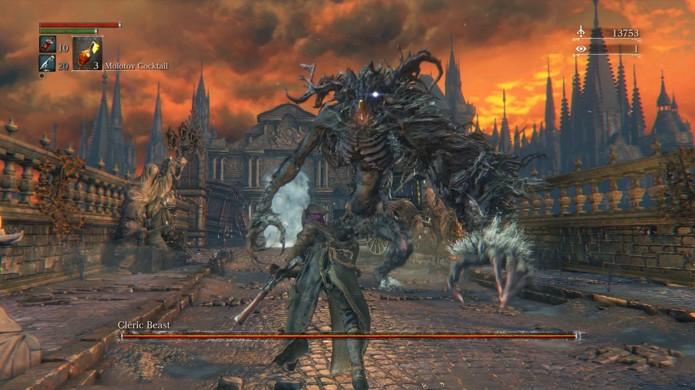

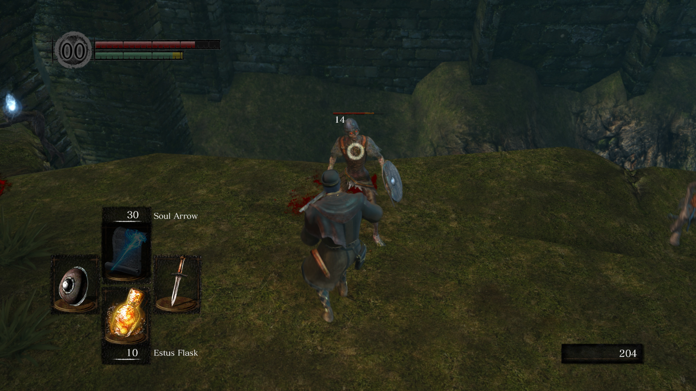
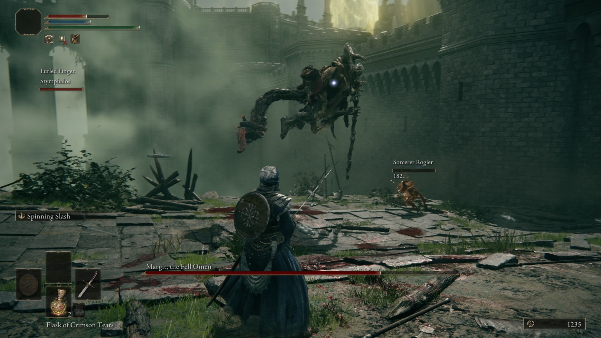
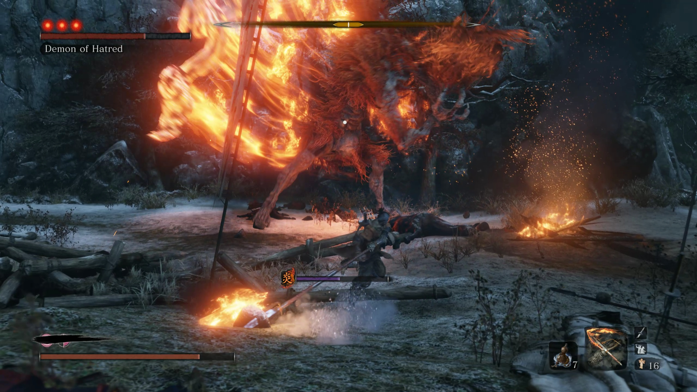
Built to be precise and highly customizable, this system has math at its core. With a quick and easy installation, you can use it in the most varied projects. Made using blueprints only.
Supported versions
Version 4.0 was launched for Unreal Engine 4.26 to 5.1. So you still have access to previous versions (all of them are compatible with 4.26-5.1), being version 3.0 available in 4.24-4.25 and version 2.0 available in 4.17-4.23. You can check the documentation for previous versions in the #previous-versions section.
This new version brings a lot of new content, including a new input system (now you can switch targets in any direction), multitargeting system, simple softlock, native support for splitscreen projects and much more. Check it in the #update log section.
Supported projects
- Third and first person games
- Top/down games
- Fixed camera games
- Splitscreen games
- Network games
Getting started
Unreal library
First of all, download and add it to your project. You can find it in your Unreal Engine Library. If you're updating it from version 3.0, make sure to restart your computer before adding it to your project (if possible, make a backup of your configs folder).

Setup
You can check out this video to watch the LTS setup, or follow the steps below. The LTS V4 uses two main components: the lock-on component and the target component. They were separated into two for optimization and practicality purposes, so that only the necessary variables are used in the target. The main steps you'll check below are, in summary:
Lock-on component |
Target component |
Extra stuff: tips and customization |
|---|---|---|
| Adding lock-on component | Adding target component | Debug component |
| Setting up the input settings | Setting up the sockets | Reticle override component |
Adding the lock-on component
This component goes to the pawn you want to perform the lock-on action (so controlled by a player).
Open your character blueprint and go to the components panel (normally at the top left corner). Click Add Component and search for "Lock". Add the BPC Lock On component.
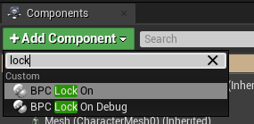
Info
We'll take a look on the BPC Lock On Debug later.
This component is the LTS core. It contains several useful functions that you can check in details in the #functions section.
Lock-on setup
Now let's setup the action keys. Drag and drop the lock-on component from your components panel into your event graph.
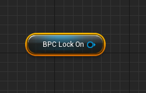
We'll call it lock-on reference from now on. Using this reference, call the function LockOn Toggle. Connect it to an event key you want or to an action key. This function is used to lock-on and unlock the target. You should have something like one of the two possibilities below:
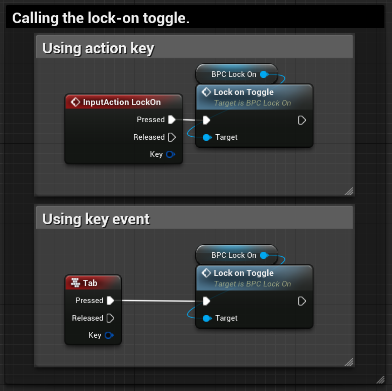
Switch targets setup
To setup the targeting switch, go to your camera movement nodes, if you have one. Connect the boolean returned by the function isLockedOn of the lock-on reference to a branch node. In the false output, connect your current logic flow. In the true output, connect the corresponding Swap Target function of the lock-on reference: Yaw for left/right movement and Pitch for up/down movement. You should have something like this:
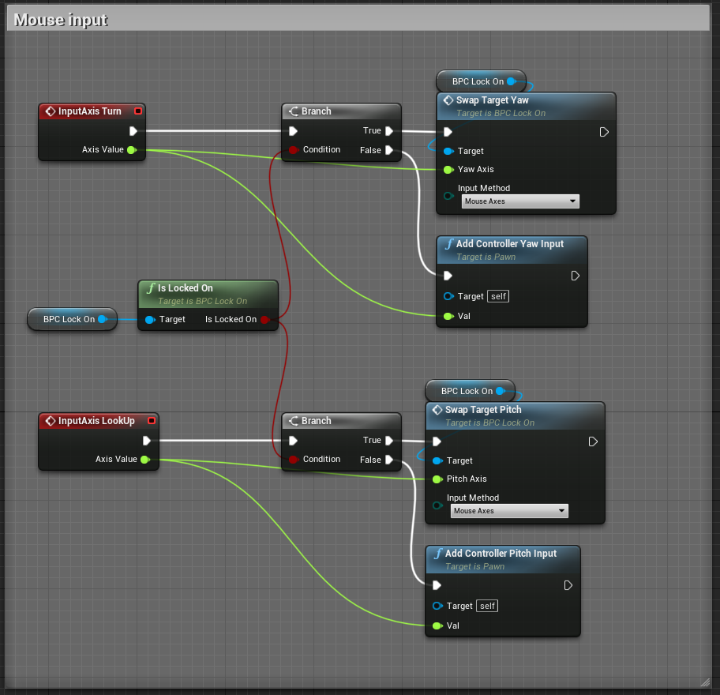
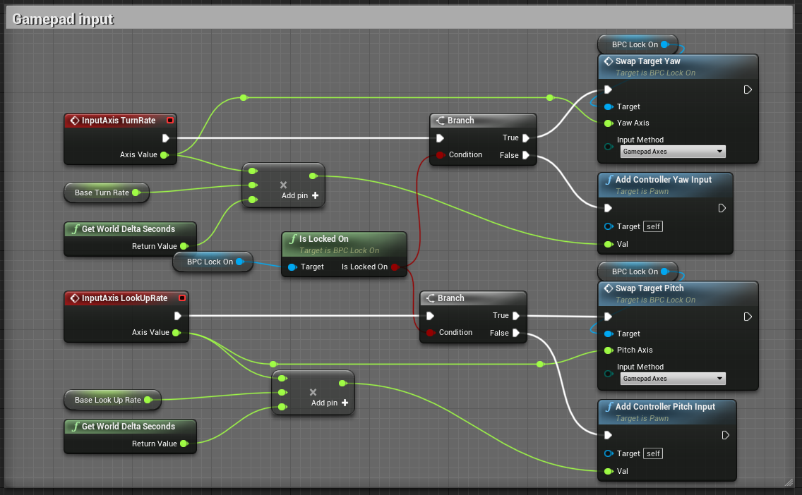
Below you can use copy to clipboard note and paste the functions mentioned right into your blueprint.
Copy-paste
Begin Object Class=/Script/BlueprintGraph.K2Node_CallFunction Name="K2Node_CallFunction_95"
bIsPureFunc=True
FunctionReference=(MemberParent=BlueprintGeneratedClass'"/Game/LockOnTS/Components/BPC_LockOn.BPC_LockOn_C"',MemberName="IsLockedOn",MemberGuid=39D1ACAE4395686BAA4E649CA3465121)
NodePosX=-1024
NodePosY=-192
NodeGuid=B4B1A0F8487763FCCF34B1B06C349E21
CustomProperties Pin (PinId=5ECCA4194A16F4E1F5206085542A8476,PinName="self",PinFriendlyName=NSLOCTEXT("K2Node", "Target", "Target"),PinToolTip="Target\nBPC Lock On Object Reference",PinType.PinCategory="object",PinType.PinSubCategory="",PinType.PinSubCategoryObject=BlueprintGeneratedClass'"/Game/LockOnTS/Components/BPC_LockOn.BPC_LockOn_C"',PinType.PinSubCategoryMemberReference=(),PinType.PinValueType=(),PinType.ContainerType=None,PinType.bIsReference=False,PinType.bIsConst=False,PinType.bIsWeakPointer=False,PinType.bIsUObjectWrapper=False,LinkedTo=(K2Node_VariableGet_33 3E965EB64C9CA0DAF3C721909FBDF0E7,),PersistentGuid=00000000000000000000000000000000,bHidden=False,bNotConnectable=False,bDefaultValueIsReadOnly=False,bDefaultValueIsIgnored=False,bAdvancedView=False,bOrphanedPin=False,)
CustomProperties Pin (PinId=D0438DAB4BD0FCB017B933AD0DBE9865,PinName="bIsLockedOn",PinToolTip="Is Locked On\nBoolean",Direction="EGPD_Output",PinType.PinCategory="bool",PinType.PinSubCategory="",PinType.PinSubCategoryObject=None,PinType.PinSubCategoryMemberReference=(),PinType.PinValueType=(),PinType.ContainerType=None,PinType.bIsReference=False,PinType.bIsConst=False,PinType.bIsWeakPointer=False,PinType.bIsUObjectWrapper=False,DefaultValue="false",AutogeneratedDefaultValue="false",LinkedTo=(K2Node_IfThenElse_9 B46B8831488B447EDB1AAEBB6236618B,K2Node_IfThenElse_10 B46B8831488B447EDB1AAEBB6236618B,),PersistentGuid=00000000000000000000000000000000,bHidden=False,bNotConnectable=False,bDefaultValueIsReadOnly=False,bDefaultValueIsIgnored=False,bAdvancedView=False,bOrphanedPin=False,)
End Object
Begin Object Class=/Script/BlueprintGraph.K2Node_VariableGet Name="K2Node_VariableGet_33"
VariableReference=(MemberName="BPC_LockOn",bSelfContext=True)
NodePosX=-1184
NodePosY=-152
NodeGuid=2127EB32473AA61947BB3AA251A24AE6
CustomProperties Pin (PinId=3E965EB64C9CA0DAF3C721909FBDF0E7,PinName="BPC_LockOn",Direction="EGPD_Output",PinType.PinCategory="object",PinType.PinSubCategory="",PinType.PinSubCategoryObject=BlueprintGeneratedClass'"/Game/LockOnTS/Components/BPC_LockOn.BPC_LockOn_C"',PinType.PinSubCategoryMemberReference=(),PinType.PinValueType=(),PinType.ContainerType=None,PinType.bIsReference=False,PinType.bIsConst=False,PinType.bIsWeakPointer=False,PinType.bIsUObjectWrapper=False,LinkedTo=(K2Node_CallFunction_95 5ECCA4194A16F4E1F5206085542A8476,),PersistentGuid=00000000000000000000000000000000,bHidden=False,bNotConnectable=False,bDefaultValueIsReadOnly=False,bDefaultValueIsIgnored=False,bAdvancedView=False,bOrphanedPin=False,)
CustomProperties Pin (PinId=B0F5188645C1BEFA7C77019B3BE9B25F,PinName="self",PinFriendlyName=NSLOCTEXT("K2Node", "Target", "Target"),PinType.PinCategory="object",PinType.PinSubCategory="",PinType.PinSubCategoryObject=BlueprintGeneratedClass'"/Game/LockOnTS/Demo/ThirdPersonTemplate/ThirdPersonBP/Blueprints/ThirdPersonCharacter.ThirdPersonCharacter_C"',PinType.PinSubCategoryMemberReference=(),PinType.PinValueType=(),PinType.ContainerType=None,PinType.bIsReference=False,PinType.bIsConst=False,PinType.bIsWeakPointer=False,PinType.bIsUObjectWrapper=False,PersistentGuid=00000000000000000000000000000000,bHidden=True,bNotConnectable=False,bDefaultValueIsReadOnly=False,bDefaultValueIsIgnored=False,bAdvancedView=False,bOrphanedPin=False,)
End Object
Begin Object Class=/Script/BlueprintGraph.K2Node_VariableGet Name="K2Node_VariableGet_14"
VariableReference=(MemberName="BPC_LockOn",bSelfContext=True)
NodePosX=-592
NodePosY=-496
NodeGuid=74750A66413CF0EDF423AF81E70FB791
CustomProperties Pin (PinId=315F69184E68B661CEF1729C24E566D5,PinName="BPC_LockOn",Direction="EGPD_Output",PinType.PinCategory="object",PinType.PinSubCategory="",PinType.PinSubCategoryObject=BlueprintGeneratedClass'"/Game/LockOnTS/Components/BPC_LockOn.BPC_LockOn_C"',PinType.PinSubCategoryMemberReference=(),PinType.PinValueType=(),PinType.ContainerType=None,PinType.bIsReference=False,PinType.bIsConst=False,PinType.bIsWeakPointer=False,PinType.bIsUObjectWrapper=False,LinkedTo=(K2Node_CallFunction_15 289C74014E7F2641A657C0A06A5F2ADF,),PersistentGuid=00000000000000000000000000000000,bHidden=False,bNotConnectable=False,bDefaultValueIsReadOnly=False,bDefaultValueIsIgnored=False,bAdvancedView=False,bOrphanedPin=False,)
CustomProperties Pin (PinId=EF8AB8E346324BE9DC8FE4A169547DB6,PinName="self",PinFriendlyName=NSLOCTEXT("K2Node", "Target", "Target"),PinType.PinCategory="object",PinType.PinSubCategory="",PinType.PinSubCategoryObject=BlueprintGeneratedClass'"/Game/LockOnTS/Demo/ThirdPersonTemplate/ThirdPersonBP/Blueprints/ThirdPersonCharacter.ThirdPersonCharacter_C"',PinType.PinSubCategoryMemberReference=(),PinType.PinValueType=(),PinType.ContainerType=None,PinType.bIsReference=False,PinType.bIsConst=False,PinType.bIsWeakPointer=False,PinType.bIsUObjectWrapper=False,PersistentGuid=00000000000000000000000000000000,bHidden=True,bNotConnectable=False,bDefaultValueIsReadOnly=False,bDefaultValueIsIgnored=False,bAdvancedView=False,bOrphanedPin=False,)
End Object
Begin Object Class=/Script/BlueprintGraph.K2Node_CallFunction Name="K2Node_CallFunction_15"
FunctionReference=(MemberParent=BlueprintGeneratedClass'"/Game/LockOnTS/Components/BPC_LockOn.BPC_LockOn_C"',MemberName="SwapTargetYaw",MemberGuid=F28418BA4C6BC387531A3DAE6BFD2B64)
NodePosX=-592
NodePosY=-464
NodeGuid=194A61604E145095D05EEFB47564BF6D
CustomProperties Pin (PinId=CB9933274D7FD10D2BDDF980D4E7315E,PinName="execute",PinToolTip="\nExec",PinType.PinCategory="exec",PinType.PinSubCategory="",PinType.PinSubCategoryObject=None,PinType.PinSubCategoryMemberReference=(),PinType.PinValueType=(),PinType.ContainerType=None,PinType.bIsReference=False,PinType.bIsConst=False,PinType.bIsWeakPointer=False,PinType.bIsUObjectWrapper=True,LinkedTo=(K2Node_IfThenElse_9 B9C82A834114DB6CC343B895BB9B9A70,),PersistentGuid=00000000000000000000000000000000,bHidden=False,bNotConnectable=False,bDefaultValueIsReadOnly=False,bDefaultValueIsIgnored=False,bAdvancedView=False,bOrphanedPin=False,)
CustomProperties Pin (PinId=D146496940D2B6C16FF5909833B5D85C,PinName="then",PinToolTip="\nExec",Direction="EGPD_Output",PinType.PinCategory="exec",PinType.PinSubCategory="",PinType.PinSubCategoryObject=None,PinType.PinSubCategoryMemberReference=(),PinType.PinValueType=(),PinType.ContainerType=None,PinType.bIsReference=False,PinType.bIsConst=False,PinType.bIsWeakPointer=False,PinType.bIsUObjectWrapper=True,PersistentGuid=00000000000000000000000000000000,bHidden=False,bNotConnectable=False,bDefaultValueIsReadOnly=False,bDefaultValueIsIgnored=False,bAdvancedView=False,bOrphanedPin=False,)
CustomProperties Pin (PinId=289C74014E7F2641A657C0A06A5F2ADF,PinName="self",PinFriendlyName=NSLOCTEXT("K2Node", "Target", "Target"),PinToolTip="Target\nBPC Lock On Object Reference",PinType.PinCategory="object",PinType.PinSubCategory="",PinType.PinSubCategoryObject=BlueprintGeneratedClass'"/Game/LockOnTS/Components/BPC_LockOn.BPC_LockOn_C"',PinType.PinSubCategoryMemberReference=(),PinType.PinValueType=(),PinType.ContainerType=None,PinType.bIsReference=False,PinType.bIsConst=False,PinType.bIsWeakPointer=False,PinType.bIsUObjectWrapper=False,LinkedTo=(K2Node_VariableGet_14 315F69184E68B661CEF1729C24E566D5,),PersistentGuid=00000000000000000000000000000000,bHidden=False,bNotConnectable=False,bDefaultValueIsReadOnly=False,bDefaultValueIsIgnored=False,bAdvancedView=False,bOrphanedPin=False,)
CustomProperties Pin (PinId=1304B66445CE643426C673B3F0AE4CD4,PinName="YawAxis",PinToolTip="Yaw Axis\nFloat",PinType.PinCategory="float",PinType.PinSubCategory="",PinType.PinSubCategoryObject=None,PinType.PinSubCategoryMemberReference=(),PinType.PinValueType=(),PinType.ContainerType=None,PinType.bIsReference=False,PinType.bIsConst=False,PinType.bIsWeakPointer=False,PinType.bIsUObjectWrapper=False,DefaultValue="0.0",AutogeneratedDefaultValue="0.0",LinkedTo=(K2Node_InputAxisEvent_50 BBF7F91048BBC914349D87A297E50AAF,),PersistentGuid=00000000000000000000000000000000,bHidden=False,bNotConnectable=False,bDefaultValueIsReadOnly=False,bDefaultValueIsIgnored=False,bAdvancedView=False,bOrphanedPin=False,)
CustomProperties Pin (PinId=99FBFC4C48A8326E6AEFE48329E768DC,PinName="InputMethod",PinToolTip="Input Method\nE_InputMethod Enum",PinType.PinCategory="byte",PinType.PinSubCategory="",PinType.PinSubCategoryObject=UserDefinedEnum'"/Game/LockOnTS/Enumerations/E_InputMethod.E_InputMethod"',PinType.PinSubCategoryMemberReference=(),PinType.PinValueType=(),PinType.ContainerType=None,PinType.bIsReference=False,PinType.bIsConst=False,PinType.bIsWeakPointer=False,PinType.bIsUObjectWrapper=False,DefaultValue="NewEnumerator0",AutogeneratedDefaultValue="NewEnumerator0",PersistentGuid=00000000000000000000000000000000,bHidden=False,bNotConnectable=False,bDefaultValueIsReadOnly=False,bDefaultValueIsIgnored=False,bAdvancedView=False,bOrphanedPin=False,)
End Object
Begin Object Class=/Script/BlueprintGraph.K2Node_IfThenElse Name="K2Node_IfThenElse_9"
NodePosX=-816
NodePosY=-448
NodeGuid=1C3B7C7A4D7E3894BF923B9B636AA8BC
CustomProperties Pin (PinId=411CED844EEDF7553B26D39196240ED6,PinName="execute",PinType.PinCategory="exec",PinType.PinSubCategory="",PinType.PinSubCategoryObject=None,PinType.PinSubCategoryMemberReference=(),PinType.PinValueType=(),PinType.ContainerType=None,PinType.bIsReference=False,PinType.bIsConst=False,PinType.bIsWeakPointer=False,PinType.bIsUObjectWrapper=True,LinkedTo=(K2Node_InputAxisEvent_50 4EA8805E4D46053CAE4FB786F695CACC,),PersistentGuid=00000000000000000000000000000000,bHidden=False,bNotConnectable=False,bDefaultValueIsReadOnly=False,bDefaultValueIsIgnored=False,bAdvancedView=False,bOrphanedPin=False,)
CustomProperties Pin (PinId=B46B8831488B447EDB1AAEBB6236618B,PinName="Condition",PinType.PinCategory="bool",PinType.PinSubCategory="",PinType.PinSubCategoryObject=None,PinType.PinSubCategoryMemberReference=(),PinType.PinValueType=(),PinType.ContainerType=None,PinType.bIsReference=False,PinType.bIsConst=False,PinType.bIsWeakPointer=False,PinType.bIsUObjectWrapper=True,DefaultValue="true",AutogeneratedDefaultValue="true",LinkedTo=(K2Node_CallFunction_95 D0438DAB4BD0FCB017B933AD0DBE9865,),PersistentGuid=00000000000000000000000000000000,bHidden=False,bNotConnectable=False,bDefaultValueIsReadOnly=False,bDefaultValueIsIgnored=False,bAdvancedView=False,bOrphanedPin=False,)
CustomProperties Pin (PinId=B9C82A834114DB6CC343B895BB9B9A70,PinName="then",PinFriendlyName=NSLOCTEXT("K2Node", "true", "true"),Direction="EGPD_Output",PinType.PinCategory="exec",PinType.PinSubCategory="",PinType.PinSubCategoryObject=None,PinType.PinSubCategoryMemberReference=(),PinType.PinValueType=(),PinType.ContainerType=None,PinType.bIsReference=False,PinType.bIsConst=False,PinType.bIsWeakPointer=False,PinType.bIsUObjectWrapper=False,LinkedTo=(K2Node_CallFunction_15 CB9933274D7FD10D2BDDF980D4E7315E,),PersistentGuid=00000000000000000000000000000000,bHidden=False,bNotConnectable=False,bDefaultValueIsReadOnly=False,bDefaultValueIsIgnored=False,bAdvancedView=False,bOrphanedPin=False,)
CustomProperties Pin (PinId=D93A63664C5B9E7972653AA1C14EBF0E,PinName="else",PinFriendlyName=NSLOCTEXT("K2Node", "false", "false"),Direction="EGPD_Output",PinType.PinCategory="exec",PinType.PinSubCategory="",PinType.PinSubCategoryObject=None,PinType.PinSubCategoryMemberReference=(),PinType.PinValueType=(),PinType.ContainerType=None,PinType.bIsReference=False,PinType.bIsConst=False,PinType.bIsWeakPointer=False,PinType.bIsUObjectWrapper=False,LinkedTo=(K2Node_CallFunction_8427 AC5861FB446F0EA88D28C99EA7B701B6,),PersistentGuid=00000000000000000000000000000000,bHidden=False,bNotConnectable=False,bDefaultValueIsReadOnly=False,bDefaultValueIsIgnored=False,bAdvancedView=False,bOrphanedPin=False,)
End Object
Begin Object Class=/Script/BlueprintGraph.K2Node_CallFunction Name="K2Node_CallFunction_95"
bIsPureFunc=True
FunctionReference=(MemberParent=BlueprintGeneratedClass'"/Game/LockOnTS/Components/BPC_LockOn.BPC_LockOn_C"',MemberName="IsLockedOn",MemberGuid=39D1ACAE4395686BAA4E649CA3465121)
NodePosX=-1024
NodePosY=-192
NodeGuid=B4B1A0F8487763FCCF34B1B06C349E21
CustomProperties Pin (PinId=5ECCA4194A16F4E1F5206085542A8476,PinName="self",PinFriendlyName=NSLOCTEXT("K2Node", "Target", "Target"),PinToolTip="Target\nBPC Lock On Object Reference",PinType.PinCategory="object",PinType.PinSubCategory="",PinType.PinSubCategoryObject=BlueprintGeneratedClass'"/Game/LockOnTS/Components/BPC_LockOn.BPC_LockOn_C"',PinType.PinSubCategoryMemberReference=(),PinType.PinValueType=(),PinType.ContainerType=None,PinType.bIsReference=False,PinType.bIsConst=False,PinType.bIsWeakPointer=False,PinType.bIsUObjectWrapper=False,LinkedTo=(K2Node_VariableGet_33 3E965EB64C9CA0DAF3C721909FBDF0E7,),PersistentGuid=00000000000000000000000000000000,bHidden=False,bNotConnectable=False,bDefaultValueIsReadOnly=False,bDefaultValueIsIgnored=False,bAdvancedView=False,bOrphanedPin=False,)
CustomProperties Pin (PinId=D0438DAB4BD0FCB017B933AD0DBE9865,PinName="bIsLockedOn",PinToolTip="Is Locked On\nBoolean",Direction="EGPD_Output",PinType.PinCategory="bool",PinType.PinSubCategory="",PinType.PinSubCategoryObject=None,PinType.PinSubCategoryMemberReference=(),PinType.PinValueType=(),PinType.ContainerType=None,PinType.bIsReference=False,PinType.bIsConst=False,PinType.bIsWeakPointer=False,PinType.bIsUObjectWrapper=False,DefaultValue="false",AutogeneratedDefaultValue="false",LinkedTo=(K2Node_IfThenElse_9 B46B8831488B447EDB1AAEBB6236618B,K2Node_IfThenElse_10 B46B8831488B447EDB1AAEBB6236618B,),PersistentGuid=00000000000000000000000000000000,bHidden=False,bNotConnectable=False,bDefaultValueIsReadOnly=False,bDefaultValueIsIgnored=False,bAdvancedView=False,bOrphanedPin=False,)
End Object
Begin Object Class=/Script/BlueprintGraph.K2Node_VariableGet Name="K2Node_VariableGet_33"
VariableReference=(MemberName="BPC_LockOn",bSelfContext=True)
NodePosX=-1184
NodePosY=-152
NodeGuid=2127EB32473AA61947BB3AA251A24AE6
CustomProperties Pin (PinId=3E965EB64C9CA0DAF3C721909FBDF0E7,PinName="BPC_LockOn",Direction="EGPD_Output",PinType.PinCategory="object",PinType.PinSubCategory="",PinType.PinSubCategoryObject=BlueprintGeneratedClass'"/Game/LockOnTS/Components/BPC_LockOn.BPC_LockOn_C"',PinType.PinSubCategoryMemberReference=(),PinType.PinValueType=(),PinType.ContainerType=None,PinType.bIsReference=False,PinType.bIsConst=False,PinType.bIsWeakPointer=False,PinType.bIsUObjectWrapper=False,LinkedTo=(K2Node_CallFunction_95 5ECCA4194A16F4E1F5206085542A8476,),PersistentGuid=00000000000000000000000000000000,bHidden=False,bNotConnectable=False,bDefaultValueIsReadOnly=False,bDefaultValueIsIgnored=False,bAdvancedView=False,bOrphanedPin=False,)
CustomProperties Pin (PinId=B0F5188645C1BEFA7C77019B3BE9B25F,PinName="self",PinFriendlyName=NSLOCTEXT("K2Node", "Target", "Target"),PinType.PinCategory="object",PinType.PinSubCategory="",PinType.PinSubCategoryObject=BlueprintGeneratedClass'"/Game/LockOnTS/Demo/ThirdPersonTemplate/ThirdPersonBP/Blueprints/ThirdPersonCharacter.ThirdPersonCharacter_C"',PinType.PinSubCategoryMemberReference=(),PinType.PinValueType=(),PinType.ContainerType=None,PinType.bIsReference=False,PinType.bIsConst=False,PinType.bIsWeakPointer=False,PinType.bIsUObjectWrapper=False,PersistentGuid=00000000000000000000000000000000,bHidden=True,bNotConnectable=False,bDefaultValueIsReadOnly=False,bDefaultValueIsIgnored=False,bAdvancedView=False,bOrphanedPin=False,)
End Object
Begin Object Class=/Script/BlueprintGraph.K2Node_VariableGet Name="K2Node_VariableGet_15"
VariableReference=(MemberName="BPC_LockOn",bSelfContext=True)
NodePosX=-608
NodePosY=-48
NodeGuid=CB61E9324A3F642E7F3538A3ABAE41C9
CustomProperties Pin (PinId=315F69184E68B661CEF1729C24E566D5,PinName="BPC_LockOn",Direction="EGPD_Output",PinType.PinCategory="object",PinType.PinSubCategory="",PinType.PinSubCategoryObject=BlueprintGeneratedClass'"/Game/LockOnTS/Components/BPC_LockOn.BPC_LockOn_C"',PinType.PinSubCategoryMemberReference=(),PinType.PinValueType=(),PinType.ContainerType=None,PinType.bIsReference=False,PinType.bIsConst=False,PinType.bIsWeakPointer=False,PinType.bIsUObjectWrapper=False,LinkedTo=(K2Node_CallFunction_16 BA256D4546C12B2ECB6E8C80503E1062,),PersistentGuid=00000000000000000000000000000000,bHidden=False,bNotConnectable=False,bDefaultValueIsReadOnly=False,bDefaultValueIsIgnored=False,bAdvancedView=False,bOrphanedPin=False,)
CustomProperties Pin (PinId=EF8AB8E346324BE9DC8FE4A169547DB6,PinName="self",PinFriendlyName=NSLOCTEXT("K2Node", "Target", "Target"),PinType.PinCategory="object",PinType.PinSubCategory="",PinType.PinSubCategoryObject=BlueprintGeneratedClass'"/Game/LockOnTS/Demo/ThirdPersonTemplate/ThirdPersonBP/Blueprints/ThirdPersonCharacter.ThirdPersonCharacter_C"',PinType.PinSubCategoryMemberReference=(),PinType.PinValueType=(),PinType.ContainerType=None,PinType.bIsReference=False,PinType.bIsConst=False,PinType.bIsWeakPointer=False,PinType.bIsUObjectWrapper=False,PersistentGuid=00000000000000000000000000000000,bHidden=True,bNotConnectable=False,bDefaultValueIsReadOnly=False,bDefaultValueIsIgnored=False,bAdvancedView=False,bOrphanedPin=False,)
End Object
Begin Object Class=/Script/BlueprintGraph.K2Node_CallFunction Name="K2Node_CallFunction_16"
FunctionReference=(MemberParent=BlueprintGeneratedClass'"/Game/LockOnTS/Components/BPC_LockOn.BPC_LockOn_C"',MemberName="SwapTargetPitch",MemberGuid=52F093654E593D72F89ED790BA2A91DB)
NodePosX=-608
NodePosY=-16
NodeGuid=B2A4B9FD451BE24BD5E612A03127E82A
CustomProperties Pin (PinId=C5A65A2F491055BBF82961B328E0F2F8,PinName="execute",PinToolTip="\nExec",PinType.PinCategory="exec",PinType.PinSubCategory="",PinType.PinSubCategoryObject=None,PinType.PinSubCategoryMemberReference=(),PinType.PinValueType=(),PinType.ContainerType=None,PinType.bIsReference=False,PinType.bIsConst=False,PinType.bIsWeakPointer=False,PinType.bIsUObjectWrapper=True,LinkedTo=(K2Node_IfThenElse_10 B9C82A834114DB6CC343B895BB9B9A70,),PersistentGuid=00000000000000000000000000000000,bHidden=False,bNotConnectable=False,bDefaultValueIsReadOnly=False,bDefaultValueIsIgnored=False,bAdvancedView=False,bOrphanedPin=False,)
CustomProperties Pin (PinId=7F23F8E04DE313E0DEC3C1BD23E0AE1A,PinName="then",PinToolTip="\nExec",Direction="EGPD_Output",PinType.PinCategory="exec",PinType.PinSubCategory="",PinType.PinSubCategoryObject=None,PinType.PinSubCategoryMemberReference=(),PinType.PinValueType=(),PinType.ContainerType=None,PinType.bIsReference=False,PinType.bIsConst=False,PinType.bIsWeakPointer=False,PinType.bIsUObjectWrapper=True,PersistentGuid=00000000000000000000000000000000,bHidden=False,bNotConnectable=False,bDefaultValueIsReadOnly=False,bDefaultValueIsIgnored=False,bAdvancedView=False,bOrphanedPin=False,)
CustomProperties Pin (PinId=BA256D4546C12B2ECB6E8C80503E1062,PinName="self",PinFriendlyName=NSLOCTEXT("K2Node", "Target", "Target"),PinToolTip="Target\nBPC Lock On Object Reference",PinType.PinCategory="object",PinType.PinSubCategory="",PinType.PinSubCategoryObject=BlueprintGeneratedClass'"/Game/LockOnTS/Components/BPC_LockOn.BPC_LockOn_C"',PinType.PinSubCategoryMemberReference=(),PinType.PinValueType=(),PinType.ContainerType=None,PinType.bIsReference=False,PinType.bIsConst=False,PinType.bIsWeakPointer=False,PinType.bIsUObjectWrapper=True,LinkedTo=(K2Node_VariableGet_15 315F69184E68B661CEF1729C24E566D5,),PersistentGuid=00000000000000000000000000000000,bHidden=False,bNotConnectable=False,bDefaultValueIsReadOnly=False,bDefaultValueIsIgnored=False,bAdvancedView=False,bOrphanedPin=False,)
CustomProperties Pin (PinId=3FEF708C43C39F571042D0B4827B7DA0,PinName="PitchAxis",PinToolTip="Pitch Axis\nFloat",PinType.PinCategory="float",PinType.PinSubCategory="",PinType.PinSubCategoryObject=None,PinType.PinSubCategoryMemberReference=(),PinType.PinValueType=(),PinType.ContainerType=None,PinType.bIsReference=False,PinType.bIsConst=False,PinType.bIsWeakPointer=False,PinType.bIsUObjectWrapper=False,DefaultValue="0.0",AutogeneratedDefaultValue="0.0",LinkedTo=(K2Node_InputAxisEvent_42 51D93D94425368394BD3178EECFEBAC5,),PersistentGuid=00000000000000000000000000000000,bHidden=False,bNotConnectable=False,bDefaultValueIsReadOnly=False,bDefaultValueIsIgnored=False,bAdvancedView=False,bOrphanedPin=False,)
CustomProperties Pin (PinId=224C28FD42B5DD666AFA0DBD7370E958,PinName="InputMethod",PinToolTip="Input Method\nE_InputMethod Enum",PinType.PinCategory="byte",PinType.PinSubCategory="",PinType.PinSubCategoryObject=UserDefinedEnum'"/Game/LockOnTS/Enumerations/E_InputMethod.E_InputMethod"',PinType.PinSubCategoryMemberReference=(),PinType.PinValueType=(),PinType.ContainerType=None,PinType.bIsReference=False,PinType.bIsConst=False,PinType.bIsWeakPointer=False,PinType.bIsUObjectWrapper=True,DefaultValue="NewEnumerator0",AutogeneratedDefaultValue="NewEnumerator0",PersistentGuid=00000000000000000000000000000000,bHidden=False,bNotConnectable=False,bDefaultValueIsReadOnly=False,bDefaultValueIsIgnored=False,bAdvancedView=False,bOrphanedPin=False,)
End Object
Begin Object Class=/Script/BlueprintGraph.K2Node_IfThenElse Name="K2Node_IfThenElse_10"
NodePosX=-816
NodeGuid=6F8886E1417852A9597204AA7D915324
CustomProperties Pin (PinId=411CED844EEDF7553B26D39196240ED6,PinName="execute",PinType.PinCategory="exec",PinType.PinSubCategory="",PinType.PinSubCategoryObject=None,PinType.PinSubCategoryMemberReference=(),PinType.PinValueType=(),PinType.ContainerType=None,PinType.bIsReference=False,PinType.bIsConst=False,PinType.bIsWeakPointer=False,PinType.bIsUObjectWrapper=True,LinkedTo=(K2Node_InputAxisEvent_42 8A18CDCA4CA9DC53009183890781351E,),PersistentGuid=00000000000000000000000000000000,bHidden=False,bNotConnectable=False,bDefaultValueIsReadOnly=False,bDefaultValueIsIgnored=False,bAdvancedView=False,bOrphanedPin=False,)
CustomProperties Pin (PinId=B46B8831488B447EDB1AAEBB6236618B,PinName="Condition",PinType.PinCategory="bool",PinType.PinSubCategory="",PinType.PinSubCategoryObject=None,PinType.PinSubCategoryMemberReference=(),PinType.PinValueType=(),PinType.ContainerType=None,PinType.bIsReference=False,PinType.bIsConst=False,PinType.bIsWeakPointer=False,PinType.bIsUObjectWrapper=True,DefaultValue="true",AutogeneratedDefaultValue="true",LinkedTo=(K2Node_CallFunction_95 D0438DAB4BD0FCB017B933AD0DBE9865,),PersistentGuid=00000000000000000000000000000000,bHidden=False,bNotConnectable=False,bDefaultValueIsReadOnly=False,bDefaultValueIsIgnored=False,bAdvancedView=False,bOrphanedPin=False,)
CustomProperties Pin (PinId=B9C82A834114DB6CC343B895BB9B9A70,PinName="then",PinFriendlyName=NSLOCTEXT("K2Node", "true", "true"),Direction="EGPD_Output",PinType.PinCategory="exec",PinType.PinSubCategory="",PinType.PinSubCategoryObject=None,PinType.PinSubCategoryMemberReference=(),PinType.PinValueType=(),PinType.ContainerType=None,PinType.bIsReference=False,PinType.bIsConst=False,PinType.bIsWeakPointer=False,PinType.bIsUObjectWrapper=False,LinkedTo=(K2Node_CallFunction_16 C5A65A2F491055BBF82961B328E0F2F8,),PersistentGuid=00000000000000000000000000000000,bHidden=False,bNotConnectable=False,bDefaultValueIsReadOnly=False,bDefaultValueIsIgnored=False,bAdvancedView=False,bOrphanedPin=False,)
CustomProperties Pin (PinId=D93A63664C5B9E7972653AA1C14EBF0E,PinName="else",PinFriendlyName=NSLOCTEXT("K2Node", "false", "false"),Direction="EGPD_Output",PinType.PinCategory="exec",PinType.PinSubCategory="",PinType.PinSubCategoryObject=None,PinType.PinSubCategoryMemberReference=(),PinType.PinValueType=(),PinType.ContainerType=None,PinType.bIsReference=False,PinType.bIsConst=False,PinType.bIsWeakPointer=False,PinType.bIsUObjectWrapper=False,LinkedTo=(K2Node_CallFunction_8428 4BD453654770667709F2908855479617,),PersistentGuid=00000000000000000000000000000000,bHidden=False,bNotConnectable=False,bDefaultValueIsReadOnly=False,bDefaultValueIsIgnored=False,bAdvancedView=False,bOrphanedPin=False,)
End Object
Begin Object Class=/Script/BlueprintGraph.K2Node_VariableGet Name="K2Node_VariableGet_5"
VariableReference=(MemberName="BPC_LockOn",bSelfContext=True)
NodePosX=-544
NodePosY=1031
NodeGuid=F185852A40BB5E43517E3799302DF1C2
CustomProperties Pin (PinId=3E965EB64C9CA0DAF3C721909FBDF0E7,PinName="BPC_LockOn",Direction="EGPD_Output",PinType.PinCategory="object",PinType.PinSubCategory="",PinType.PinSubCategoryObject=BlueprintGeneratedClass'"/Game/LockOnTS/Components/BPC_LockOn.BPC_LockOn_C"',PinType.PinSubCategoryMemberReference=(),PinType.PinValueType=(),PinType.ContainerType=None,PinType.bIsReference=False,PinType.bIsConst=False,PinType.bIsWeakPointer=False,PinType.bIsUObjectWrapper=False,LinkedTo=(K2Node_CallFunction_4 5ECCA4194A16F4E1F5206085542A8476,),PersistentGuid=00000000000000000000000000000000,bHidden=False,bNotConnectable=False,bDefaultValueIsReadOnly=False,bDefaultValueIsIgnored=False,bAdvancedView=False,bOrphanedPin=False,)
CustomProperties Pin (PinId=B0F5188645C1BEFA7C77019B3BE9B25F,PinName="self",PinFriendlyName=NSLOCTEXT("K2Node", "Target", "Target"),PinType.PinCategory="object",PinType.PinSubCategory="",PinType.PinSubCategoryObject=BlueprintGeneratedClass'"/Game/LockOnTS/Demo/ThirdPersonTemplate/ThirdPersonBP/Blueprints/ThirdPersonCharacter.ThirdPersonCharacter_C"',PinType.PinSubCategoryMemberReference=(),PinType.PinValueType=(),PinType.ContainerType=None,PinType.bIsReference=False,PinType.bIsConst=False,PinType.bIsWeakPointer=False,PinType.bIsUObjectWrapper=False,PersistentGuid=00000000000000000000000000000000,bHidden=True,bNotConnectable=False,bDefaultValueIsReadOnly=False,bDefaultValueIsIgnored=False,bAdvancedView=False,bOrphanedPin=False,)
End Object
Begin Object Class=/Script/BlueprintGraph.K2Node_CallFunction Name="K2Node_CallFunction_4"
bIsPureFunc=True
FunctionReference=(MemberParent=BlueprintGeneratedClass'"/Game/LockOnTS/Components/BPC_LockOn.BPC_LockOn_C"',MemberName="IsLockedOn",MemberGuid=39D1ACAE4395686BAA4E649CA3465121)
NodePosX=-368
NodePosY=992
NodeGuid=B36463524FB4C44B8EDA10B8BE52A763
CustomProperties Pin (PinId=5ECCA4194A16F4E1F5206085542A8476,PinName="self",PinFriendlyName=NSLOCTEXT("K2Node", "Target", "Target"),PinToolTip="Target\nBPC Lock On Object Reference",PinType.PinCategory="object",PinType.PinSubCategory="",PinType.PinSubCategoryObject=BlueprintGeneratedClass'"/Game/LockOnTS/Components/BPC_LockOn.BPC_LockOn_C"',PinType.PinSubCategoryMemberReference=(),PinType.PinValueType=(),PinType.ContainerType=None,PinType.bIsReference=False,PinType.bIsConst=False,PinType.bIsWeakPointer=False,PinType.bIsUObjectWrapper=False,LinkedTo=(K2Node_VariableGet_5 3E965EB64C9CA0DAF3C721909FBDF0E7,),PersistentGuid=00000000000000000000000000000000,bHidden=False,bNotConnectable=False,bDefaultValueIsReadOnly=False,bDefaultValueIsIgnored=False,bAdvancedView=False,bOrphanedPin=False,)
CustomProperties Pin (PinId=D0438DAB4BD0FCB017B933AD0DBE9865,PinName="bIsLockedOn",PinToolTip="Is Locked On\nBoolean",Direction="EGPD_Output",PinType.PinCategory="bool",PinType.PinSubCategory="",PinType.PinSubCategoryObject=None,PinType.PinSubCategoryMemberReference=(),PinType.PinValueType=(),PinType.ContainerType=None,PinType.bIsReference=False,PinType.bIsConst=False,PinType.bIsWeakPointer=False,PinType.bIsUObjectWrapper=False,DefaultValue="false",AutogeneratedDefaultValue="false",LinkedTo=(K2Node_IfThenElse_1 B46B8831488B447EDB1AAEBB6236618B,K2Node_IfThenElse_0 B46B8831488B447EDB1AAEBB6236618B,),PersistentGuid=00000000000000000000000000000000,bHidden=False,bNotConnectable=False,bDefaultValueIsReadOnly=False,bDefaultValueIsIgnored=False,bAdvancedView=False,bOrphanedPin=False,)
End Object
Tip: how to free the movement axes
If you want to free the movement of one or both axis, you can use the functions Filter Yaw Axis and Filter Pitch Axis and mark the option(s) Free Yaw Axis or/and Filter Pitch Axis in the BPC_LockOn details panel to do it. Here is a demonstrative video. Below you can check the setup in the tabs.
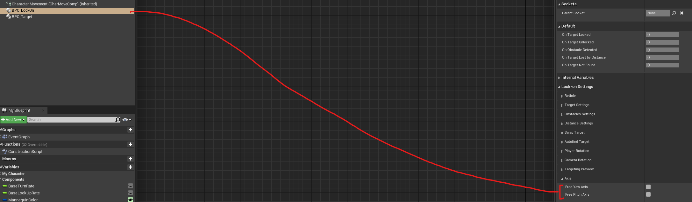
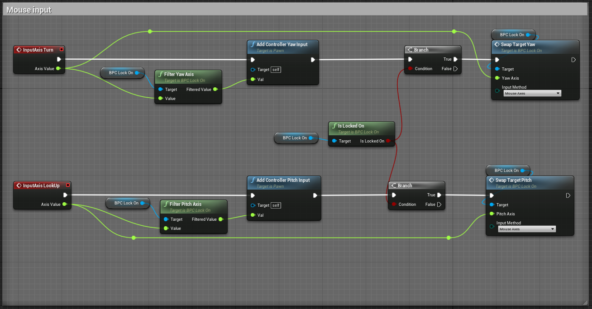
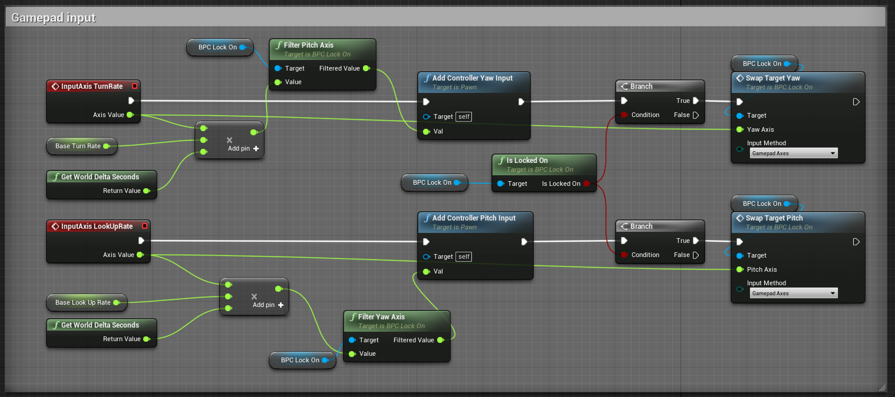
Copy-paste
Begin Object Class=/Script/BlueprintGraph.K2Node_InputAxisKeyEvent Name="K2Node_InputAxisKeyEvent_0"
AxisKey=MouseX
EventReference=(MemberParent=Package'"/Script/Engine"')
CustomFunctionName="InpAxisKeyEvt_MouseX_K2Node_InputAxisKeyEvent_0"
NodePosX=16
NodePosY=-3184
NodeGuid=CC74FDAB48C2BF426B818C8513CF2D2F
CustomProperties Pin (PinId=F21474294BE76F210BEB9198ECD0FD47,PinName="OutputDelegate",Direction="EGPD_Output",PinType.PinCategory="delegate",PinType.PinSubCategory="",PinType.PinSubCategoryObject=None,PinType.PinSubCategoryMemberReference=(),PinType.PinValueType=(),PinType.ContainerType=None,PinType.bIsReference=False,PinType.bIsConst=False,PinType.bIsWeakPointer=False,PinType.bIsUObjectWrapper=True,PersistentGuid=00000000000000000000000000000000,bHidden=False,bNotConnectable=False,bDefaultValueIsReadOnly=False,bDefaultValueIsIgnored=False,bAdvancedView=False,bOrphanedPin=False,)
CustomProperties Pin (PinId=AF1A2D8343FD2823DE615683F693C084,PinName="then",Direction="EGPD_Output",PinType.PinCategory="exec",PinType.PinSubCategory="",PinType.PinSubCategoryObject=None,PinType.PinSubCategoryMemberReference=(),PinType.PinValueType=(),PinType.ContainerType=None,PinType.bIsReference=False,PinType.bIsConst=False,PinType.bIsWeakPointer=False,PinType.bIsUObjectWrapper=True,LinkedTo=(K2Node_IfThenElse_3 411CED844EEDF7553B26D39196240ED6,),PersistentGuid=00000000000000000000000000000000,bHidden=False,bNotConnectable=False,bDefaultValueIsReadOnly=False,bDefaultValueIsIgnored=False,bAdvancedView=False,bOrphanedPin=False,)
CustomProperties Pin (PinId=AC8DAA134275C66B72DFCE81DF4EAB5C,PinName="AxisValue",PinToolTip="Axis Value\nFloat",Direction="EGPD_Output",PinType.PinCategory="float",PinType.PinSubCategory="",PinType.PinSubCategoryObject=None,PinType.PinSubCategoryMemberReference=(),PinType.PinValueType=(),PinType.ContainerType=None,PinType.bIsReference=False,PinType.bIsConst=False,PinType.bIsWeakPointer=False,PinType.bIsUObjectWrapper=False,DefaultValue="0.0",AutogeneratedDefaultValue="0.0",LinkedTo=(K2Node_CallFunction_8 1304B66445CE643426C673B3F0AE4CD4,),PersistentGuid=00000000000000000000000000000000,bHidden=False,bNotConnectable=False,bDefaultValueIsReadOnly=False,bDefaultValueIsIgnored=False,bAdvancedView=False,bOrphanedPin=False,)
End Object
Begin Object Class=/Script/BlueprintGraph.K2Node_InputAxisKeyEvent Name="K2Node_InputAxisKeyEvent_1"
AxisKey=MouseY
EventReference=(MemberParent=Package'"/Script/Engine"')
CustomFunctionName="InpAxisKeyEvt_MouseY_K2Node_InputAxisKeyEvent_1"
NodePosX=16
NodePosY=-2944
NodeGuid=773AF90B49C05892755D9EA46B1C4F0D
CustomProperties Pin (PinId=DC8358144A58571533169188407543A1,PinName="OutputDelegate",Direction="EGPD_Output",PinType.PinCategory="delegate",PinType.PinSubCategory="",PinType.PinSubCategoryObject=None,PinType.PinSubCategoryMemberReference=(),PinType.PinValueType=(),PinType.ContainerType=None,PinType.bIsReference=False,PinType.bIsConst=False,PinType.bIsWeakPointer=False,PinType.bIsUObjectWrapper=True,PersistentGuid=00000000000000000000000000000000,bHidden=False,bNotConnectable=False,bDefaultValueIsReadOnly=False,bDefaultValueIsIgnored=False,bAdvancedView=False,bOrphanedPin=False,)
CustomProperties Pin (PinId=3B348C424E258E5D758B078449AFCDFE,PinName="then",Direction="EGPD_Output",PinType.PinCategory="exec",PinType.PinSubCategory="",PinType.PinSubCategoryObject=None,PinType.PinSubCategoryMemberReference=(),PinType.PinValueType=(),PinType.ContainerType=None,PinType.bIsReference=False,PinType.bIsConst=False,PinType.bIsWeakPointer=False,PinType.bIsUObjectWrapper=True,LinkedTo=(K2Node_IfThenElse_2 411CED844EEDF7553B26D39196240ED6,),PersistentGuid=00000000000000000000000000000000,bHidden=False,bNotConnectable=False,bDefaultValueIsReadOnly=False,bDefaultValueIsIgnored=False,bAdvancedView=False,bOrphanedPin=False,)
CustomProperties Pin (PinId=0ABC77D349CFB54D4013539C9B932EEF,PinName="AxisValue",PinToolTip="Axis Value\nFloat",Direction="EGPD_Output",PinType.PinCategory="float",PinType.PinSubCategory="",PinType.PinSubCategoryObject=None,PinType.PinSubCategoryMemberReference=(),PinType.PinValueType=(),PinType.ContainerType=None,PinType.bIsReference=False,PinType.bIsConst=False,PinType.bIsWeakPointer=False,PinType.bIsUObjectWrapper=False,DefaultValue="0.0",AutogeneratedDefaultValue="0.0",LinkedTo=(K2Node_CallFunction_9 3FEF708C43C39F571042D0B4827B7DA0,),PersistentGuid=00000000000000000000000000000000,bHidden=False,bNotConnectable=False,bDefaultValueIsReadOnly=False,bDefaultValueIsIgnored=False,bAdvancedView=False,bOrphanedPin=False,)
End Object
Begin Object Class=/Script/BlueprintGraph.K2Node_InputAxisKeyEvent Name="K2Node_InputAxisKeyEvent_2"
AxisKey=Gamepad_RightX
EventReference=(MemberParent=Package'"/Script/Engine"')
CustomFunctionName="InpAxisKeyEvt_Gamepad_RightX_K2Node_InputAxisKeyEvent_2"
NodePosX=16
NodePosY=-2672
NodeGuid=9637FFB946A54D35895D1DBAFEEB3F31
CustomProperties Pin (PinId=678A10614A50F027432158BD32236436,PinName="OutputDelegate",Direction="EGPD_Output",PinType.PinCategory="delegate",PinType.PinSubCategory="",PinType.PinSubCategoryObject=None,PinType.PinSubCategoryMemberReference=(),PinType.PinValueType=(),PinType.ContainerType=None,PinType.bIsReference=False,PinType.bIsConst=False,PinType.bIsWeakPointer=False,PinType.bIsUObjectWrapper=True,PersistentGuid=00000000000000000000000000000000,bHidden=False,bNotConnectable=False,bDefaultValueIsReadOnly=False,bDefaultValueIsIgnored=False,bAdvancedView=False,bOrphanedPin=False,)
CustomProperties Pin (PinId=B18370C8484AF7CCE09DDBA3D1A295B7,PinName="then",Direction="EGPD_Output",PinType.PinCategory="exec",PinType.PinSubCategory="",PinType.PinSubCategoryObject=None,PinType.PinSubCategoryMemberReference=(),PinType.PinValueType=(),PinType.ContainerType=None,PinType.bIsReference=False,PinType.bIsConst=False,PinType.bIsWeakPointer=False,PinType.bIsUObjectWrapper=True,LinkedTo=(K2Node_IfThenElse_8 411CED844EEDF7553B26D39196240ED6,),PersistentGuid=00000000000000000000000000000000,bHidden=False,bNotConnectable=False,bDefaultValueIsReadOnly=False,bDefaultValueIsIgnored=False,bAdvancedView=False,bOrphanedPin=False,)
CustomProperties Pin (PinId=C9CC436B41C52ADAC83F4DB4FB1FC4AE,PinName="AxisValue",PinToolTip="Axis Value\nFloat",Direction="EGPD_Output",PinType.PinCategory="float",PinType.PinSubCategory="",PinType.PinSubCategoryObject=None,PinType.PinSubCategoryMemberReference=(),PinType.PinValueType=(),PinType.ContainerType=None,PinType.bIsReference=False,PinType.bIsConst=False,PinType.bIsWeakPointer=False,PinType.bIsUObjectWrapper=False,DefaultValue="0.0",AutogeneratedDefaultValue="0.0",LinkedTo=(K2Node_CallFunction_206 1304B66445CE643426C673B3F0AE4CD4,),PersistentGuid=00000000000000000000000000000000,bHidden=False,bNotConnectable=False,bDefaultValueIsReadOnly=False,bDefaultValueIsIgnored=False,bAdvancedView=False,bOrphanedPin=False,)
End Object
Begin Object Class=/Script/BlueprintGraph.K2Node_InputAxisKeyEvent Name="K2Node_InputAxisKeyEvent_3"
AxisKey=Gamepad_RightY
EventReference=(MemberParent=Package'"/Script/Engine"')
CustomFunctionName="InpAxisKeyEvt_Gamepad_RightY_K2Node_InputAxisKeyEvent_3"
NodePosY=-2432
NodeGuid=F834AD044B701FFCBFFD048DEB58E49A
CustomProperties Pin (PinId=F3275CF34F0819AB546243B359AFC16C,PinName="OutputDelegate",Direction="EGPD_Output",PinType.PinCategory="delegate",PinType.PinSubCategory="",PinType.PinSubCategoryObject=None,PinType.PinSubCategoryMemberReference=(),PinType.PinValueType=(),PinType.ContainerType=None,PinType.bIsReference=False,PinType.bIsConst=False,PinType.bIsWeakPointer=False,PinType.bIsUObjectWrapper=True,PersistentGuid=00000000000000000000000000000000,bHidden=False,bNotConnectable=False,bDefaultValueIsReadOnly=False,bDefaultValueIsIgnored=False,bAdvancedView=False,bOrphanedPin=False,)
CustomProperties Pin (PinId=53628BC54F108BEB784A1FB32E4EF313,PinName="then",Direction="EGPD_Output",PinType.PinCategory="exec",PinType.PinSubCategory="",PinType.PinSubCategoryObject=None,PinType.PinSubCategoryMemberReference=(),PinType.PinValueType=(),PinType.ContainerType=None,PinType.bIsReference=False,PinType.bIsConst=False,PinType.bIsWeakPointer=False,PinType.bIsUObjectWrapper=True,LinkedTo=(K2Node_IfThenElse_7 411CED844EEDF7553B26D39196240ED6,),PersistentGuid=00000000000000000000000000000000,bHidden=False,bNotConnectable=False,bDefaultValueIsReadOnly=False,bDefaultValueIsIgnored=False,bAdvancedView=False,bOrphanedPin=False,)
CustomProperties Pin (PinId=42CE65F64D844694B2113C9850632C60,PinName="AxisValue",PinToolTip="Axis Value\nFloat",Direction="EGPD_Output",PinType.PinCategory="float",PinType.PinSubCategory="",PinType.PinSubCategoryObject=None,PinType.PinSubCategoryMemberReference=(),PinType.PinValueType=(),PinType.ContainerType=None,PinType.bIsReference=False,PinType.bIsConst=False,PinType.bIsWeakPointer=False,PinType.bIsUObjectWrapper=False,DefaultValue="0.0",AutogeneratedDefaultValue="0.0",LinkedTo=(K2Node_CallFunction_124 3FEF708C43C39F571042D0B4827B7DA0,),PersistentGuid=00000000000000000000000000000000,bHidden=False,bNotConnectable=False,bDefaultValueIsReadOnly=False,bDefaultValueIsIgnored=False,bAdvancedView=False,bOrphanedPin=False,)
End Object
Begin Object Class=/Script/BlueprintGraph.K2Node_IfThenElse Name="K2Node_IfThenElse_2"
NodePosX=416
NodePosY=-2944
NodeGuid=593D01614497192B66CE79ACA2D18B0A
CustomProperties Pin (PinId=411CED844EEDF7553B26D39196240ED6,PinName="execute",PinType.PinCategory="exec",PinType.PinSubCategory="",PinType.PinSubCategoryObject=None,PinType.PinSubCategoryMemberReference=(),PinType.PinValueType=(),PinType.ContainerType=None,PinType.bIsReference=False,PinType.bIsConst=False,PinType.bIsWeakPointer=False,PinType.bIsUObjectWrapper=True,LinkedTo=(K2Node_InputAxisKeyEvent_1 3B348C424E258E5D758B078449AFCDFE,),PersistentGuid=00000000000000000000000000000000,bHidden=False,bNotConnectable=False,bDefaultValueIsReadOnly=False,bDefaultValueIsIgnored=False,bAdvancedView=False,bOrphanedPin=False,)
CustomProperties Pin (PinId=B46B8831488B447EDB1AAEBB6236618B,PinName="Condition",PinType.PinCategory="bool",PinType.PinSubCategory="",PinType.PinSubCategoryObject=None,PinType.PinSubCategoryMemberReference=(),PinType.PinValueType=(),PinType.ContainerType=None,PinType.bIsReference=False,PinType.bIsConst=False,PinType.bIsWeakPointer=False,PinType.bIsUObjectWrapper=True,DefaultValue="true",AutogeneratedDefaultValue="true",LinkedTo=(K2Node_CallFunction_7 D0438DAB4BD0FCB017B933AD0DBE9865,),PersistentGuid=00000000000000000000000000000000,bHidden=False,bNotConnectable=False,bDefaultValueIsReadOnly=False,bDefaultValueIsIgnored=False,bAdvancedView=False,bOrphanedPin=False,)
CustomProperties Pin (PinId=B9C82A834114DB6CC343B895BB9B9A70,PinName="then",PinFriendlyName=NSLOCTEXT("K2Node", "true", "true"),Direction="EGPD_Output",PinType.PinCategory="exec",PinType.PinSubCategory="",PinType.PinSubCategoryObject=None,PinType.PinSubCategoryMemberReference=(),PinType.PinValueType=(),PinType.ContainerType=None,PinType.bIsReference=False,PinType.bIsConst=False,PinType.bIsWeakPointer=False,PinType.bIsUObjectWrapper=False,LinkedTo=(K2Node_CallFunction_9 C5A65A2F491055BBF82961B328E0F2F8,),PersistentGuid=00000000000000000000000000000000,bHidden=False,bNotConnectable=False,bDefaultValueIsReadOnly=False,bDefaultValueIsIgnored=False,bAdvancedView=False,bOrphanedPin=False,)
CustomProperties Pin (PinId=D93A63664C5B9E7972653AA1C14EBF0E,PinName="else",PinFriendlyName=NSLOCTEXT("K2Node", "false", "false"),Direction="EGPD_Output",PinType.PinCategory="exec",PinType.PinSubCategory="",PinType.PinSubCategoryObject=None,PinType.PinSubCategoryMemberReference=(),PinType.PinValueType=(),PinType.ContainerType=None,PinType.bIsReference=False,PinType.bIsConst=False,PinType.bIsWeakPointer=False,PinType.bIsUObjectWrapper=False,PersistentGuid=00000000000000000000000000000000,bHidden=False,bNotConnectable=False,bDefaultValueIsReadOnly=False,bDefaultValueIsIgnored=False,bAdvancedView=False,bOrphanedPin=False,)
End Object
Begin Object Class=/Script/BlueprintGraph.K2Node_VariableGet Name="K2Node_VariableGet_8"
VariableReference=(MemberName="BPC_LockOn",bSelfContext=True)
NodePosX=16
NodePosY=-3033
NodeGuid=529834D349A59AF54B057CB53F01468E
CustomProperties Pin (PinId=3E965EB64C9CA0DAF3C721909FBDF0E7,PinName="BPC_LockOn",Direction="EGPD_Output",PinType.PinCategory="object",PinType.PinSubCategory="",PinType.PinSubCategoryObject=BlueprintGeneratedClass'"/Game/LockOnTS/Components/BPC_LockOn.BPC_LockOn_C"',PinType.PinSubCategoryMemberReference=(),PinType.PinValueType=(),PinType.ContainerType=None,PinType.bIsReference=False,PinType.bIsConst=False,PinType.bIsWeakPointer=False,PinType.bIsUObjectWrapper=False,LinkedTo=(K2Node_CallFunction_7 5ECCA4194A16F4E1F5206085542A8476,),PersistentGuid=00000000000000000000000000000000,bHidden=False,bNotConnectable=False,bDefaultValueIsReadOnly=False,bDefaultValueIsIgnored=False,bAdvancedView=False,bOrphanedPin=False,)
CustomProperties Pin (PinId=B0F5188645C1BEFA7C77019B3BE9B25F,PinName="self",PinFriendlyName=NSLOCTEXT("K2Node", "Target", "Target"),PinType.PinCategory="object",PinType.PinSubCategory="",PinType.PinSubCategoryObject=BlueprintGeneratedClass'"/Game/LockOnTS/Demo/ThirdPersonTemplate/ThirdPersonBP/Blueprints/ThirdPersonCharacter.ThirdPersonCharacter_C"',PinType.PinSubCategoryMemberReference=(),PinType.PinValueType=(),PinType.ContainerType=None,PinType.bIsReference=False,PinType.bIsConst=False,PinType.bIsWeakPointer=False,PinType.bIsUObjectWrapper=False,PersistentGuid=00000000000000000000000000000000,bHidden=True,bNotConnectable=False,bDefaultValueIsReadOnly=False,bDefaultValueIsIgnored=False,bAdvancedView=False,bOrphanedPin=False,)
End Object
Begin Object Class=/Script/BlueprintGraph.K2Node_CallFunction Name="K2Node_CallFunction_7"
bIsPureFunc=True
FunctionReference=(MemberParent=BlueprintGeneratedClass'"/Game/LockOnTS/Components/BPC_LockOn.BPC_LockOn_C"',MemberName="IsLockedOn",MemberGuid=39D1ACAE4395686BAA4E649CA3465121)
NodePosX=192
NodePosY=-3072
NodeGuid=CD2723C84A34BFF34A4A16832525995C
CustomProperties Pin (PinId=5ECCA4194A16F4E1F5206085542A8476,PinName="self",PinFriendlyName=NSLOCTEXT("K2Node", "Target", "Target"),PinToolTip="Target\nBPC Lock On Object Reference",PinType.PinCategory="object",PinType.PinSubCategory="",PinType.PinSubCategoryObject=BlueprintGeneratedClass'"/Game/LockOnTS/Components/BPC_LockOn.BPC_LockOn_C"',PinType.PinSubCategoryMemberReference=(),PinType.PinValueType=(),PinType.ContainerType=None,PinType.bIsReference=False,PinType.bIsConst=False,PinType.bIsWeakPointer=False,PinType.bIsUObjectWrapper=False,LinkedTo=(K2Node_VariableGet_8 3E965EB64C9CA0DAF3C721909FBDF0E7,),PersistentGuid=00000000000000000000000000000000,bHidden=False,bNotConnectable=False,bDefaultValueIsReadOnly=False,bDefaultValueIsIgnored=False,bAdvancedView=False,bOrphanedPin=False,)
CustomProperties Pin (PinId=D0438DAB4BD0FCB017B933AD0DBE9865,PinName="bIsLockedOn",PinToolTip="Is Locked On\nBoolean",Direction="EGPD_Output",PinType.PinCategory="bool",PinType.PinSubCategory="",PinType.PinSubCategoryObject=None,PinType.PinSubCategoryMemberReference=(),PinType.PinValueType=(),PinType.ContainerType=None,PinType.bIsReference=False,PinType.bIsConst=False,PinType.bIsWeakPointer=False,PinType.bIsUObjectWrapper=False,DefaultValue="false",AutogeneratedDefaultValue="false",LinkedTo=(K2Node_IfThenElse_3 B46B8831488B447EDB1AAEBB6236618B,K2Node_IfThenElse_2 B46B8831488B447EDB1AAEBB6236618B,),PersistentGuid=00000000000000000000000000000000,bHidden=False,bNotConnectable=False,bDefaultValueIsReadOnly=False,bDefaultValueIsIgnored=False,bAdvancedView=False,bOrphanedPin=False,)
End Object
Begin Object Class=/Script/BlueprintGraph.K2Node_IfThenElse Name="K2Node_IfThenElse_3"
NodePosX=416
NodePosY=-3184
NodeGuid=974E2D7445B1957676D2B68CF7FBD950
CustomProperties Pin (PinId=411CED844EEDF7553B26D39196240ED6,PinName="execute",PinType.PinCategory="exec",PinType.PinSubCategory="",PinType.PinSubCategoryObject=None,PinType.PinSubCategoryMemberReference=(),PinType.PinValueType=(),PinType.ContainerType=None,PinType.bIsReference=False,PinType.bIsConst=False,PinType.bIsWeakPointer=False,PinType.bIsUObjectWrapper=True,LinkedTo=(K2Node_InputAxisKeyEvent_0 AF1A2D8343FD2823DE615683F693C084,),PersistentGuid=00000000000000000000000000000000,bHidden=False,bNotConnectable=False,bDefaultValueIsReadOnly=False,bDefaultValueIsIgnored=False,bAdvancedView=False,bOrphanedPin=False,)
CustomProperties Pin (PinId=B46B8831488B447EDB1AAEBB6236618B,PinName="Condition",PinType.PinCategory="bool",PinType.PinSubCategory="",PinType.PinSubCategoryObject=None,PinType.PinSubCategoryMemberReference=(),PinType.PinValueType=(),PinType.ContainerType=None,PinType.bIsReference=False,PinType.bIsConst=False,PinType.bIsWeakPointer=False,PinType.bIsUObjectWrapper=True,DefaultValue="true",AutogeneratedDefaultValue="true",LinkedTo=(K2Node_CallFunction_7 D0438DAB4BD0FCB017B933AD0DBE9865,),PersistentGuid=00000000000000000000000000000000,bHidden=False,bNotConnectable=False,bDefaultValueIsReadOnly=False,bDefaultValueIsIgnored=False,bAdvancedView=False,bOrphanedPin=False,)
CustomProperties Pin (PinId=B9C82A834114DB6CC343B895BB9B9A70,PinName="then",PinFriendlyName=NSLOCTEXT("K2Node", "true", "true"),Direction="EGPD_Output",PinType.PinCategory="exec",PinType.PinSubCategory="",PinType.PinSubCategoryObject=None,PinType.PinSubCategoryMemberReference=(),PinType.PinValueType=(),PinType.ContainerType=None,PinType.bIsReference=False,PinType.bIsConst=False,PinType.bIsWeakPointer=False,PinType.bIsUObjectWrapper=False,LinkedTo=(K2Node_CallFunction_8 CB9933274D7FD10D2BDDF980D4E7315E,),PersistentGuid=00000000000000000000000000000000,bHidden=False,bNotConnectable=False,bDefaultValueIsReadOnly=False,bDefaultValueIsIgnored=False,bAdvancedView=False,bOrphanedPin=False,)
CustomProperties Pin (PinId=D93A63664C5B9E7972653AA1C14EBF0E,PinName="else",PinFriendlyName=NSLOCTEXT("K2Node", "false", "false"),Direction="EGPD_Output",PinType.PinCategory="exec",PinType.PinSubCategory="",PinType.PinSubCategoryObject=None,PinType.PinSubCategoryMemberReference=(),PinType.PinValueType=(),PinType.ContainerType=None,PinType.bIsReference=False,PinType.bIsConst=False,PinType.bIsWeakPointer=False,PinType.bIsUObjectWrapper=False,PersistentGuid=00000000000000000000000000000000,bHidden=False,bNotConnectable=False,bDefaultValueIsReadOnly=False,bDefaultValueIsIgnored=False,bAdvancedView=False,bOrphanedPin=False,)
End Object
Begin Object Class=/Script/BlueprintGraph.K2Node_VariableGet Name="K2Node_VariableGet_9"
VariableReference=(MemberName="BPC_LockOn",bSelfContext=True)
NodePosX=480
NodePosY=-3040
NodeGuid=C61391154A3B77E15D90A8BFF5DC672F
CustomProperties Pin (PinId=315F69184E68B661CEF1729C24E566D5,PinName="BPC_LockOn",Direction="EGPD_Output",PinType.PinCategory="object",PinType.PinSubCategory="",PinType.PinSubCategoryObject=BlueprintGeneratedClass'"/Game/LockOnTS/Components/BPC_LockOn.BPC_LockOn_C"',PinType.PinSubCategoryMemberReference=(),PinType.PinValueType=(),PinType.ContainerType=None,PinType.bIsReference=False,PinType.bIsConst=False,PinType.bIsWeakPointer=False,PinType.bIsUObjectWrapper=False,LinkedTo=(K2Node_CallFunction_8 289C74014E7F2641A657C0A06A5F2ADF,K2Node_CallFunction_9 BA256D4546C12B2ECB6E8C80503E1062,),PersistentGuid=00000000000000000000000000000000,bHidden=False,bNotConnectable=False,bDefaultValueIsReadOnly=False,bDefaultValueIsIgnored=False,bAdvancedView=False,bOrphanedPin=False,)
CustomProperties Pin (PinId=EF8AB8E346324BE9DC8FE4A169547DB6,PinName="self",PinFriendlyName=NSLOCTEXT("K2Node", "Target", "Target"),PinType.PinCategory="object",PinType.PinSubCategory="",PinType.PinSubCategoryObject=BlueprintGeneratedClass'"/Game/LockOnTS/Demo/ThirdPersonTemplate/ThirdPersonBP/Blueprints/ThirdPersonCharacter.ThirdPersonCharacter_C"',PinType.PinSubCategoryMemberReference=(),PinType.PinValueType=(),PinType.ContainerType=None,PinType.bIsReference=False,PinType.bIsConst=False,PinType.bIsWeakPointer=False,PinType.bIsUObjectWrapper=False,PersistentGuid=00000000000000000000000000000000,bHidden=True,bNotConnectable=False,bDefaultValueIsReadOnly=False,bDefaultValueIsIgnored=False,bAdvancedView=False,bOrphanedPin=False,)
End Object
Begin Object Class=/Script/BlueprintGraph.K2Node_CallFunction Name="K2Node_CallFunction_8"
FunctionReference=(MemberParent=BlueprintGeneratedClass'"/Game/LockOnTS/Components/BPC_LockOn.BPC_LockOn_C"',MemberName="SwapTargetYaw",MemberGuid=F28418BA4C6BC387531A3DAE6BFD2B64)
NodePosX=672
NodePosY=-3200
NodeGuid=46A8736C44F19B76F8F3B08671F7016D
CustomProperties Pin (PinId=CB9933274D7FD10D2BDDF980D4E7315E,PinName="execute",PinToolTip="\nExec",PinType.PinCategory="exec",PinType.PinSubCategory="",PinType.PinSubCategoryObject=None,PinType.PinSubCategoryMemberReference=(),PinType.PinValueType=(),PinType.ContainerType=None,PinType.bIsReference=False,PinType.bIsConst=False,PinType.bIsWeakPointer=False,PinType.bIsUObjectWrapper=True,LinkedTo=(K2Node_IfThenElse_3 B9C82A834114DB6CC343B895BB9B9A70,),PersistentGuid=00000000000000000000000000000000,bHidden=False,bNotConnectable=False,bDefaultValueIsReadOnly=False,bDefaultValueIsIgnored=False,bAdvancedView=False,bOrphanedPin=False,)
CustomProperties Pin (PinId=D146496940D2B6C16FF5909833B5D85C,PinName="then",PinToolTip="\nExec",Direction="EGPD_Output",PinType.PinCategory="exec",PinType.PinSubCategory="",PinType.PinSubCategoryObject=None,PinType.PinSubCategoryMemberReference=(),PinType.PinValueType=(),PinType.ContainerType=None,PinType.bIsReference=False,PinType.bIsConst=False,PinType.bIsWeakPointer=False,PinType.bIsUObjectWrapper=True,PersistentGuid=00000000000000000000000000000000,bHidden=False,bNotConnectable=False,bDefaultValueIsReadOnly=False,bDefaultValueIsIgnored=False,bAdvancedView=False,bOrphanedPin=False,)
CustomProperties Pin (PinId=289C74014E7F2641A657C0A06A5F2ADF,PinName="self",PinFriendlyName=NSLOCTEXT("K2Node", "Target", "Target"),PinToolTip="Target\nBPC Lock On Object Reference",PinType.PinCategory="object",PinType.PinSubCategory="",PinType.PinSubCategoryObject=BlueprintGeneratedClass'"/Game/LockOnTS/Components/BPC_LockOn.BPC_LockOn_C"',PinType.PinSubCategoryMemberReference=(),PinType.PinValueType=(),PinType.ContainerType=None,PinType.bIsReference=False,PinType.bIsConst=False,PinType.bIsWeakPointer=False,PinType.bIsUObjectWrapper=True,LinkedTo=(K2Node_VariableGet_9 315F69184E68B661CEF1729C24E566D5,),PersistentGuid=00000000000000000000000000000000,bHidden=False,bNotConnectable=False,bDefaultValueIsReadOnly=False,bDefaultValueIsIgnored=False,bAdvancedView=False,bOrphanedPin=False,)
CustomProperties Pin (PinId=1304B66445CE643426C673B3F0AE4CD4,PinName="YawAxis",PinToolTip="Yaw Axis\nFloat",PinType.PinCategory="float",PinType.PinSubCategory="",PinType.PinSubCategoryObject=None,PinType.PinSubCategoryMemberReference=(),PinType.PinValueType=(),PinType.ContainerType=None,PinType.bIsReference=False,PinType.bIsConst=False,PinType.bIsWeakPointer=False,PinType.bIsUObjectWrapper=False,DefaultValue="0.0",AutogeneratedDefaultValue="0.0",LinkedTo=(K2Node_InputAxisKeyEvent_0 AC8DAA134275C66B72DFCE81DF4EAB5C,),PersistentGuid=00000000000000000000000000000000,bHidden=False,bNotConnectable=False,bDefaultValueIsReadOnly=False,bDefaultValueIsIgnored=False,bAdvancedView=False,bOrphanedPin=False,)
CustomProperties Pin (PinId=544104B0448495104CC60CBEB31AF93E,PinName="InputMethod",PinToolTip="Input Method\nE_InputMethod Enum",PinType.PinCategory="byte",PinType.PinSubCategory="",PinType.PinSubCategoryObject=UserDefinedEnum'"/Game/LockOnTS/Enumerations/E_InputMethod.E_InputMethod"',PinType.PinSubCategoryMemberReference=(),PinType.PinValueType=(),PinType.ContainerType=None,PinType.bIsReference=False,PinType.bIsConst=False,PinType.bIsWeakPointer=False,PinType.bIsUObjectWrapper=False,DefaultValue="NewEnumerator0",AutogeneratedDefaultValue="NewEnumerator0",PersistentGuid=00000000000000000000000000000000,bHidden=False,bNotConnectable=False,bDefaultValueIsReadOnly=False,bDefaultValueIsIgnored=False,bAdvancedView=False,bOrphanedPin=False,)
End Object
Begin Object Class=/Script/BlueprintGraph.K2Node_CallFunction Name="K2Node_CallFunction_9"
FunctionReference=(MemberParent=BlueprintGeneratedClass'"/Game/LockOnTS/Components/BPC_LockOn.BPC_LockOn_C"',MemberName="SwapTargetPitch",MemberGuid=52F093654E593D72F89ED790BA2A91DB)
NodePosX=672
NodePosY=-2960
NodeGuid=E0E2EBDE4F84693265363897E02CD12E
CustomProperties Pin (PinId=C5A65A2F491055BBF82961B328E0F2F8,PinName="execute",PinToolTip="\nExec",PinType.PinCategory="exec",PinType.PinSubCategory="",PinType.PinSubCategoryObject=None,PinType.PinSubCategoryMemberReference=(),PinType.PinValueType=(),PinType.ContainerType=None,PinType.bIsReference=False,PinType.bIsConst=False,PinType.bIsWeakPointer=False,PinType.bIsUObjectWrapper=True,LinkedTo=(K2Node_IfThenElse_2 B9C82A834114DB6CC343B895BB9B9A70,),PersistentGuid=00000000000000000000000000000000,bHidden=False,bNotConnectable=False,bDefaultValueIsReadOnly=False,bDefaultValueIsIgnored=False,bAdvancedView=False,bOrphanedPin=False,)
CustomProperties Pin (PinId=7F23F8E04DE313E0DEC3C1BD23E0AE1A,PinName="then",PinToolTip="\nExec",Direction="EGPD_Output",PinType.PinCategory="exec",PinType.PinSubCategory="",PinType.PinSubCategoryObject=None,PinType.PinSubCategoryMemberReference=(),PinType.PinValueType=(),PinType.ContainerType=None,PinType.bIsReference=False,PinType.bIsConst=False,PinType.bIsWeakPointer=False,PinType.bIsUObjectWrapper=True,PersistentGuid=00000000000000000000000000000000,bHidden=False,bNotConnectable=False,bDefaultValueIsReadOnly=False,bDefaultValueIsIgnored=False,bAdvancedView=False,bOrphanedPin=False,)
CustomProperties Pin (PinId=BA256D4546C12B2ECB6E8C80503E1062,PinName="self",PinFriendlyName=NSLOCTEXT("K2Node", "Target", "Target"),PinToolTip="Target\nBPC Lock On Object Reference",PinType.PinCategory="object",PinType.PinSubCategory="",PinType.PinSubCategoryObject=BlueprintGeneratedClass'"/Game/LockOnTS/Components/BPC_LockOn.BPC_LockOn_C"',PinType.PinSubCategoryMemberReference=(),PinType.PinValueType=(),PinType.ContainerType=None,PinType.bIsReference=False,PinType.bIsConst=False,PinType.bIsWeakPointer=False,PinType.bIsUObjectWrapper=False,LinkedTo=(K2Node_VariableGet_9 315F69184E68B661CEF1729C24E566D5,),PersistentGuid=00000000000000000000000000000000,bHidden=False,bNotConnectable=False,bDefaultValueIsReadOnly=False,bDefaultValueIsIgnored=False,bAdvancedView=False,bOrphanedPin=False,)
CustomProperties Pin (PinId=3FEF708C43C39F571042D0B4827B7DA0,PinName="PitchAxis",PinToolTip="Pitch Axis\nFloat",PinType.PinCategory="float",PinType.PinSubCategory="",PinType.PinSubCategoryObject=None,PinType.PinSubCategoryMemberReference=(),PinType.PinValueType=(),PinType.ContainerType=None,PinType.bIsReference=False,PinType.bIsConst=False,PinType.bIsWeakPointer=False,PinType.bIsUObjectWrapper=False,DefaultValue="0.0",AutogeneratedDefaultValue="0.0",LinkedTo=(K2Node_InputAxisKeyEvent_1 0ABC77D349CFB54D4013539C9B932EEF,),PersistentGuid=00000000000000000000000000000000,bHidden=False,bNotConnectable=False,bDefaultValueIsReadOnly=False,bDefaultValueIsIgnored=False,bAdvancedView=False,bOrphanedPin=False,)
CustomProperties Pin (PinId=8CB24DE14A1F3F2F12902FB96670138D,PinName="InputMethod",PinToolTip="Input Method\nE_InputMethod Enum",PinType.PinCategory="byte",PinType.PinSubCategory="",PinType.PinSubCategoryObject=UserDefinedEnum'"/Game/LockOnTS/Enumerations/E_InputMethod.E_InputMethod"',PinType.PinSubCategoryMemberReference=(),PinType.PinValueType=(),PinType.ContainerType=None,PinType.bIsReference=False,PinType.bIsConst=False,PinType.bIsWeakPointer=False,PinType.bIsUObjectWrapper=True,DefaultValue="NewEnumerator0",AutogeneratedDefaultValue="NewEnumerator0",PersistentGuid=00000000000000000000000000000000,bHidden=False,bNotConnectable=False,bDefaultValueIsReadOnly=False,bDefaultValueIsIgnored=False,bAdvancedView=False,bOrphanedPin=False,)
End Object
Begin Object Class=/Script/BlueprintGraph.K2Node_IfThenElse Name="K2Node_IfThenElse_7"
NodePosX=464
NodePosY=-2432
NodeGuid=42503A254A362AB7B7C8BA994B199636
CustomProperties Pin (PinId=411CED844EEDF7553B26D39196240ED6,PinName="execute",PinType.PinCategory="exec",PinType.PinSubCategory="",PinType.PinSubCategoryObject=None,PinType.PinSubCategoryMemberReference=(),PinType.PinValueType=(),PinType.ContainerType=None,PinType.bIsReference=False,PinType.bIsConst=False,PinType.bIsWeakPointer=False,PinType.bIsUObjectWrapper=True,LinkedTo=(K2Node_InputAxisKeyEvent_3 53628BC54F108BEB784A1FB32E4EF313,),PersistentGuid=00000000000000000000000000000000,bHidden=False,bNotConnectable=False,bDefaultValueIsReadOnly=False,bDefaultValueIsIgnored=False,bAdvancedView=False,bOrphanedPin=False,)
CustomProperties Pin (PinId=B46B8831488B447EDB1AAEBB6236618B,PinName="Condition",PinType.PinCategory="bool",PinType.PinSubCategory="",PinType.PinSubCategoryObject=None,PinType.PinSubCategoryMemberReference=(),PinType.PinValueType=(),PinType.ContainerType=None,PinType.bIsReference=False,PinType.bIsConst=False,PinType.bIsWeakPointer=False,PinType.bIsUObjectWrapper=True,DefaultValue="true",AutogeneratedDefaultValue="true",LinkedTo=(K2Node_CallFunction_91 D0438DAB4BD0FCB017B933AD0DBE9865,),PersistentGuid=00000000000000000000000000000000,bHidden=False,bNotConnectable=False,bDefaultValueIsReadOnly=False,bDefaultValueIsIgnored=False,bAdvancedView=False,bOrphanedPin=False,)
CustomProperties Pin (PinId=B9C82A834114DB6CC343B895BB9B9A70,PinName="then",PinFriendlyName=NSLOCTEXT("K2Node", "true", "true"),Direction="EGPD_Output",PinType.PinCategory="exec",PinType.PinSubCategory="",PinType.PinSubCategoryObject=None,PinType.PinSubCategoryMemberReference=(),PinType.PinValueType=(),PinType.ContainerType=None,PinType.bIsReference=False,PinType.bIsConst=False,PinType.bIsWeakPointer=False,PinType.bIsUObjectWrapper=False,LinkedTo=(K2Node_CallFunction_124 C5A65A2F491055BBF82961B328E0F2F8,),PersistentGuid=00000000000000000000000000000000,bHidden=False,bNotConnectable=False,bDefaultValueIsReadOnly=False,bDefaultValueIsIgnored=False,bAdvancedView=False,bOrphanedPin=False,)
CustomProperties Pin (PinId=D93A63664C5B9E7972653AA1C14EBF0E,PinName="else",PinFriendlyName=NSLOCTEXT("K2Node", "false", "false"),Direction="EGPD_Output",PinType.PinCategory="exec",PinType.PinSubCategory="",PinType.PinSubCategoryObject=None,PinType.PinSubCategoryMemberReference=(),PinType.PinValueType=(),PinType.ContainerType=None,PinType.bIsReference=False,PinType.bIsConst=False,PinType.bIsWeakPointer=False,PinType.bIsUObjectWrapper=False,PersistentGuid=00000000000000000000000000000000,bHidden=False,bNotConnectable=False,bDefaultValueIsReadOnly=False,bDefaultValueIsIgnored=False,bAdvancedView=False,bOrphanedPin=False,)
End Object
Begin Object Class=/Script/BlueprintGraph.K2Node_IfThenElse Name="K2Node_IfThenElse_8"
NodePosX=464
NodePosY=-2672
NodeGuid=C5ED5A1A48339FC4C3BB43A289F31434
CustomProperties Pin (PinId=411CED844EEDF7553B26D39196240ED6,PinName="execute",PinType.PinCategory="exec",PinType.PinSubCategory="",PinType.PinSubCategoryObject=None,PinType.PinSubCategoryMemberReference=(),PinType.PinValueType=(),PinType.ContainerType=None,PinType.bIsReference=False,PinType.bIsConst=False,PinType.bIsWeakPointer=False,PinType.bIsUObjectWrapper=True,LinkedTo=(K2Node_InputAxisKeyEvent_2 B18370C8484AF7CCE09DDBA3D1A295B7,),PersistentGuid=00000000000000000000000000000000,bHidden=False,bNotConnectable=False,bDefaultValueIsReadOnly=False,bDefaultValueIsIgnored=False,bAdvancedView=False,bOrphanedPin=False,)
CustomProperties Pin (PinId=B46B8831488B447EDB1AAEBB6236618B,PinName="Condition",PinType.PinCategory="bool",PinType.PinSubCategory="",PinType.PinSubCategoryObject=None,PinType.PinSubCategoryMemberReference=(),PinType.PinValueType=(),PinType.ContainerType=None,PinType.bIsReference=False,PinType.bIsConst=False,PinType.bIsWeakPointer=False,PinType.bIsUObjectWrapper=True,DefaultValue="true",AutogeneratedDefaultValue="true",LinkedTo=(K2Node_CallFunction_91 D0438DAB4BD0FCB017B933AD0DBE9865,),PersistentGuid=00000000000000000000000000000000,bHidden=False,bNotConnectable=False,bDefaultValueIsReadOnly=False,bDefaultValueIsIgnored=False,bAdvancedView=False,bOrphanedPin=False,)
CustomProperties Pin (PinId=B9C82A834114DB6CC343B895BB9B9A70,PinName="then",PinFriendlyName=NSLOCTEXT("K2Node", "true", "true"),Direction="EGPD_Output",PinType.PinCategory="exec",PinType.PinSubCategory="",PinType.PinSubCategoryObject=None,PinType.PinSubCategoryMemberReference=(),PinType.PinValueType=(),PinType.ContainerType=None,PinType.bIsReference=False,PinType.bIsConst=False,PinType.bIsWeakPointer=False,PinType.bIsUObjectWrapper=False,LinkedTo=(K2Node_CallFunction_206 CB9933274D7FD10D2BDDF980D4E7315E,),PersistentGuid=00000000000000000000000000000000,bHidden=False,bNotConnectable=False,bDefaultValueIsReadOnly=False,bDefaultValueIsIgnored=False,bAdvancedView=False,bOrphanedPin=False,)
CustomProperties Pin (PinId=D93A63664C5B9E7972653AA1C14EBF0E,PinName="else",PinFriendlyName=NSLOCTEXT("K2Node", "false", "false"),Direction="EGPD_Output",PinType.PinCategory="exec",PinType.PinSubCategory="",PinType.PinSubCategoryObject=None,PinType.PinSubCategoryMemberReference=(),PinType.PinValueType=(),PinType.ContainerType=None,PinType.bIsReference=False,PinType.bIsConst=False,PinType.bIsWeakPointer=False,PinType.bIsUObjectWrapper=False,PersistentGuid=00000000000000000000000000000000,bHidden=False,bNotConnectable=False,bDefaultValueIsReadOnly=False,bDefaultValueIsIgnored=False,bAdvancedView=False,bOrphanedPin=False,)
End Object
Begin Object Class=/Script/BlueprintGraph.K2Node_VariableGet Name="K2Node_VariableGet_32"
VariableReference=(MemberName="BPC_LockOn",bSelfContext=True)
NodePosX=64
NodePosY=-2512
NodeGuid=8B0460FB4D3A421DAC11E2AF0043A076
CustomProperties Pin (PinId=3E965EB64C9CA0DAF3C721909FBDF0E7,PinName="BPC_LockOn",Direction="EGPD_Output",PinType.PinCategory="object",PinType.PinSubCategory="",PinType.PinSubCategoryObject=BlueprintGeneratedClass'"/Game/LockOnTS/Components/BPC_LockOn.BPC_LockOn_C"',PinType.PinSubCategoryMemberReference=(),PinType.PinValueType=(),PinType.ContainerType=None,PinType.bIsReference=False,PinType.bIsConst=False,PinType.bIsWeakPointer=False,PinType.bIsUObjectWrapper=False,LinkedTo=(K2Node_CallFunction_91 5ECCA4194A16F4E1F5206085542A8476,),PersistentGuid=00000000000000000000000000000000,bHidden=False,bNotConnectable=False,bDefaultValueIsReadOnly=False,bDefaultValueIsIgnored=False,bAdvancedView=False,bOrphanedPin=False,)
CustomProperties Pin (PinId=B0F5188645C1BEFA7C77019B3BE9B25F,PinName="self",PinFriendlyName=NSLOCTEXT("K2Node", "Target", "Target"),PinType.PinCategory="object",PinType.PinSubCategory="",PinType.PinSubCategoryObject=BlueprintGeneratedClass'"/Game/LockOnTS/Demo/ThirdPersonTemplate/ThirdPersonBP/Blueprints/ThirdPersonCharacter.ThirdPersonCharacter_C"',PinType.PinSubCategoryMemberReference=(),PinType.PinValueType=(),PinType.ContainerType=None,PinType.bIsReference=False,PinType.bIsConst=False,PinType.bIsWeakPointer=False,PinType.bIsUObjectWrapper=False,PersistentGuid=00000000000000000000000000000000,bHidden=True,bNotConnectable=False,bDefaultValueIsReadOnly=False,bDefaultValueIsIgnored=False,bAdvancedView=False,bOrphanedPin=False,)
End Object
Begin Object Class=/Script/BlueprintGraph.K2Node_CallFunction Name="K2Node_CallFunction_91"
bIsPureFunc=True
FunctionReference=(MemberParent=BlueprintGeneratedClass'"/Game/LockOnTS/Components/BPC_LockOn.BPC_LockOn_C"',MemberName="IsLockedOn",MemberGuid=39D1ACAE4395686BAA4E649CA3465121)
NodePosX=240
NodePosY=-2560
NodeGuid=D3C4C5354E43EE3227CB62BA52606EA8
CustomProperties Pin (PinId=5ECCA4194A16F4E1F5206085542A8476,PinName="self",PinFriendlyName=NSLOCTEXT("K2Node", "Target", "Target"),PinToolTip="Target\nBPC Lock On Object Reference",PinType.PinCategory="object",PinType.PinSubCategory="",PinType.PinSubCategoryObject=BlueprintGeneratedClass'"/Game/LockOnTS/Components/BPC_LockOn.BPC_LockOn_C"',PinType.PinSubCategoryMemberReference=(),PinType.PinValueType=(),PinType.ContainerType=None,PinType.bIsReference=False,PinType.bIsConst=False,PinType.bIsWeakPointer=False,PinType.bIsUObjectWrapper=False,LinkedTo=(K2Node_VariableGet_32 3E965EB64C9CA0DAF3C721909FBDF0E7,),PersistentGuid=00000000000000000000000000000000,bHidden=False,bNotConnectable=False,bDefaultValueIsReadOnly=False,bDefaultValueIsIgnored=False,bAdvancedView=False,bOrphanedPin=False,)
CustomProperties Pin (PinId=D0438DAB4BD0FCB017B933AD0DBE9865,PinName="bIsLockedOn",PinToolTip="Is Locked On\nBoolean",Direction="EGPD_Output",PinType.PinCategory="bool",PinType.PinSubCategory="",PinType.PinSubCategoryObject=None,PinType.PinSubCategoryMemberReference=(),PinType.PinValueType=(),PinType.ContainerType=None,PinType.bIsReference=False,PinType.bIsConst=False,PinType.bIsWeakPointer=False,PinType.bIsUObjectWrapper=False,DefaultValue="false",AutogeneratedDefaultValue="false",LinkedTo=(K2Node_IfThenElse_8 B46B8831488B447EDB1AAEBB6236618B,K2Node_IfThenElse_7 B46B8831488B447EDB1AAEBB6236618B,),PersistentGuid=00000000000000000000000000000000,bHidden=False,bNotConnectable=False,bDefaultValueIsReadOnly=False,bDefaultValueIsIgnored=False,bAdvancedView=False,bOrphanedPin=False,)
End Object
Begin Object Class=/Script/BlueprintGraph.K2Node_CallFunction Name="K2Node_CallFunction_206"
FunctionReference=(MemberParent=BlueprintGeneratedClass'"/Game/LockOnTS/Components/BPC_LockOn.BPC_LockOn_C"',MemberName="SwapTargetYaw",MemberGuid=F28418BA4C6BC387531A3DAE6BFD2B64)
NodePosX=720
NodePosY=-2688
NodeGuid=B07A0D8C4090E67D63578E8E8521360E
CustomProperties Pin (PinId=CB9933274D7FD10D2BDDF980D4E7315E,PinName="execute",PinToolTip="\nExec",PinType.PinCategory="exec",PinType.PinSubCategory="",PinType.PinSubCategoryObject=None,PinType.PinSubCategoryMemberReference=(),PinType.PinValueType=(),PinType.ContainerType=None,PinType.bIsReference=False,PinType.bIsConst=False,PinType.bIsWeakPointer=False,PinType.bIsUObjectWrapper=True,LinkedTo=(K2Node_IfThenElse_8 B9C82A834114DB6CC343B895BB9B9A70,),PersistentGuid=00000000000000000000000000000000,bHidden=False,bNotConnectable=False,bDefaultValueIsReadOnly=False,bDefaultValueIsIgnored=False,bAdvancedView=False,bOrphanedPin=False,)
CustomProperties Pin (PinId=D146496940D2B6C16FF5909833B5D85C,PinName="then",PinToolTip="\nExec",Direction="EGPD_Output",PinType.PinCategory="exec",PinType.PinSubCategory="",PinType.PinSubCategoryObject=None,PinType.PinSubCategoryMemberReference=(),PinType.PinValueType=(),PinType.ContainerType=None,PinType.bIsReference=False,PinType.bIsConst=False,PinType.bIsWeakPointer=False,PinType.bIsUObjectWrapper=True,PersistentGuid=00000000000000000000000000000000,bHidden=False,bNotConnectable=False,bDefaultValueIsReadOnly=False,bDefaultValueIsIgnored=False,bAdvancedView=False,bOrphanedPin=False,)
CustomProperties Pin (PinId=289C74014E7F2641A657C0A06A5F2ADF,PinName="self",PinFriendlyName=NSLOCTEXT("K2Node", "Target", "Target"),PinToolTip="Target\nBPC Lock On Object Reference",PinType.PinCategory="object",PinType.PinSubCategory="",PinType.PinSubCategoryObject=BlueprintGeneratedClass'"/Game/LockOnTS/Components/BPC_LockOn.BPC_LockOn_C"',PinType.PinSubCategoryMemberReference=(),PinType.PinValueType=(),PinType.ContainerType=None,PinType.bIsReference=False,PinType.bIsConst=False,PinType.bIsWeakPointer=False,PinType.bIsUObjectWrapper=False,LinkedTo=(K2Node_VariableGet_46 315F69184E68B661CEF1729C24E566D5,),PersistentGuid=00000000000000000000000000000000,bHidden=False,bNotConnectable=False,bDefaultValueIsReadOnly=False,bDefaultValueIsIgnored=False,bAdvancedView=False,bOrphanedPin=False,)
CustomProperties Pin (PinId=1304B66445CE643426C673B3F0AE4CD4,PinName="YawAxis",PinToolTip="Yaw Axis\nFloat",PinType.PinCategory="float",PinType.PinSubCategory="",PinType.PinSubCategoryObject=None,PinType.PinSubCategoryMemberReference=(),PinType.PinValueType=(),PinType.ContainerType=None,PinType.bIsReference=False,PinType.bIsConst=False,PinType.bIsWeakPointer=False,PinType.bIsUObjectWrapper=False,DefaultValue="0.0",AutogeneratedDefaultValue="0.0",LinkedTo=(K2Node_InputAxisKeyEvent_2 C9CC436B41C52ADAC83F4DB4FB1FC4AE,),PersistentGuid=00000000000000000000000000000000,bHidden=False,bNotConnectable=False,bDefaultValueIsReadOnly=False,bDefaultValueIsIgnored=False,bAdvancedView=False,bOrphanedPin=False,)
CustomProperties Pin (PinId=544104B0448495104CC60CBEB31AF93E,PinName="InputMethod",PinToolTip="Input Method\nE_InputMethod Enum",PinType.PinCategory="byte",PinType.PinSubCategory="",PinType.PinSubCategoryObject=UserDefinedEnum'"/Game/LockOnTS/Enumerations/E_InputMethod.E_InputMethod"',PinType.PinSubCategoryMemberReference=(),PinType.PinValueType=(),PinType.ContainerType=None,PinType.bIsReference=False,PinType.bIsConst=False,PinType.bIsWeakPointer=False,PinType.bIsUObjectWrapper=False,DefaultValue="NewEnumerator1",AutogeneratedDefaultValue="NewEnumerator0",PersistentGuid=00000000000000000000000000000000,bHidden=False,bNotConnectable=False,bDefaultValueIsReadOnly=False,bDefaultValueIsIgnored=False,bAdvancedView=False,bOrphanedPin=False,)
End Object
Begin Object Class=/Script/BlueprintGraph.K2Node_CallFunction Name="K2Node_CallFunction_124"
FunctionReference=(MemberParent=BlueprintGeneratedClass'"/Game/LockOnTS/Components/BPC_LockOn.BPC_LockOn_C"',MemberName="SwapTargetPitch",MemberGuid=52F093654E593D72F89ED790BA2A91DB)
NodePosX=720
NodePosY=-2448
NodeGuid=1BC73CA342D45CD24E5D51A3EBF98B67
CustomProperties Pin (PinId=C5A65A2F491055BBF82961B328E0F2F8,PinName="execute",PinToolTip="\nExec",PinType.PinCategory="exec",PinType.PinSubCategory="",PinType.PinSubCategoryObject=None,PinType.PinSubCategoryMemberReference=(),PinType.PinValueType=(),PinType.ContainerType=None,PinType.bIsReference=False,PinType.bIsConst=False,PinType.bIsWeakPointer=False,PinType.bIsUObjectWrapper=True,LinkedTo=(K2Node_IfThenElse_7 B9C82A834114DB6CC343B895BB9B9A70,),PersistentGuid=00000000000000000000000000000000,bHidden=False,bNotConnectable=False,bDefaultValueIsReadOnly=False,bDefaultValueIsIgnored=False,bAdvancedView=False,bOrphanedPin=False,)
CustomProperties Pin (PinId=7F23F8E04DE313E0DEC3C1BD23E0AE1A,PinName="then",PinToolTip="\nExec",Direction="EGPD_Output",PinType.PinCategory="exec",PinType.PinSubCategory="",PinType.PinSubCategoryObject=None,PinType.PinSubCategoryMemberReference=(),PinType.PinValueType=(),PinType.ContainerType=None,PinType.bIsReference=False,PinType.bIsConst=False,PinType.bIsWeakPointer=False,PinType.bIsUObjectWrapper=True,PersistentGuid=00000000000000000000000000000000,bHidden=False,bNotConnectable=False,bDefaultValueIsReadOnly=False,bDefaultValueIsIgnored=False,bAdvancedView=False,bOrphanedPin=False,)
CustomProperties Pin (PinId=BA256D4546C12B2ECB6E8C80503E1062,PinName="self",PinFriendlyName=NSLOCTEXT("K2Node", "Target", "Target"),PinToolTip="Target\nBPC Lock On Object Reference",PinType.PinCategory="object",PinType.PinSubCategory="",PinType.PinSubCategoryObject=BlueprintGeneratedClass'"/Game/LockOnTS/Components/BPC_LockOn.BPC_LockOn_C"',PinType.PinSubCategoryMemberReference=(),PinType.PinValueType=(),PinType.ContainerType=None,PinType.bIsReference=False,PinType.bIsConst=False,PinType.bIsWeakPointer=False,PinType.bIsUObjectWrapper=False,LinkedTo=(K2Node_VariableGet_46 315F69184E68B661CEF1729C24E566D5,),PersistentGuid=00000000000000000000000000000000,bHidden=False,bNotConnectable=False,bDefaultValueIsReadOnly=False,bDefaultValueIsIgnored=False,bAdvancedView=False,bOrphanedPin=False,)
CustomProperties Pin (PinId=3FEF708C43C39F571042D0B4827B7DA0,PinName="PitchAxis",PinToolTip="Pitch Axis\nFloat",PinType.PinCategory="float",PinType.PinSubCategory="",PinType.PinSubCategoryObject=None,PinType.PinSubCategoryMemberReference=(),PinType.PinValueType=(),PinType.ContainerType=None,PinType.bIsReference=False,PinType.bIsConst=False,PinType.bIsWeakPointer=False,PinType.bIsUObjectWrapper=False,DefaultValue="0.0",AutogeneratedDefaultValue="0.0",LinkedTo=(K2Node_InputAxisKeyEvent_3 42CE65F64D844694B2113C9850632C60,),PersistentGuid=00000000000000000000000000000000,bHidden=False,bNotConnectable=False,bDefaultValueIsReadOnly=False,bDefaultValueIsIgnored=False,bAdvancedView=False,bOrphanedPin=False,)
CustomProperties Pin (PinId=8CB24DE14A1F3F2F12902FB96670138D,PinName="InputMethod",PinToolTip="Input Method\nE_InputMethod Enum",PinType.PinCategory="byte",PinType.PinSubCategory="",PinType.PinSubCategoryObject=UserDefinedEnum'"/Game/LockOnTS/Enumerations/E_InputMethod.E_InputMethod"',PinType.PinSubCategoryMemberReference=(),PinType.PinValueType=(),PinType.ContainerType=None,PinType.bIsReference=False,PinType.bIsConst=False,PinType.bIsWeakPointer=False,PinType.bIsUObjectWrapper=True,DefaultValue="NewEnumerator1",AutogeneratedDefaultValue="NewEnumerator0",PersistentGuid=00000000000000000000000000000000,bHidden=False,bNotConnectable=False,bDefaultValueIsReadOnly=False,bDefaultValueIsIgnored=False,bAdvancedView=False,bOrphanedPin=False,)
End Object
Begin Object Class=/Script/BlueprintGraph.K2Node_VariableGet Name="K2Node_VariableGet_46"
VariableReference=(MemberName="BPC_LockOn",bSelfContext=True)
NodePosX=528
NodePosY=-2528
NodeGuid=3F6C432544539A53177023AC2AD350FA
CustomProperties Pin (PinId=315F69184E68B661CEF1729C24E566D5,PinName="BPC_LockOn",Direction="EGPD_Output",PinType.PinCategory="object",PinType.PinSubCategory="",PinType.PinSubCategoryObject=BlueprintGeneratedClass'"/Game/LockOnTS/Components/BPC_LockOn.BPC_LockOn_C"',PinType.PinSubCategoryMemberReference=(),PinType.PinValueType=(),PinType.ContainerType=None,PinType.bIsReference=False,PinType.bIsConst=False,PinType.bIsWeakPointer=False,PinType.bIsUObjectWrapper=False,LinkedTo=(K2Node_CallFunction_206 289C74014E7F2641A657C0A06A5F2ADF,K2Node_CallFunction_124 BA256D4546C12B2ECB6E8C80503E1062,),PersistentGuid=00000000000000000000000000000000,bHidden=False,bNotConnectable=False,bDefaultValueIsReadOnly=False,bDefaultValueIsIgnored=False,bAdvancedView=False,bOrphanedPin=False,)
CustomProperties Pin (PinId=EF8AB8E346324BE9DC8FE4A169547DB6,PinName="self",PinFriendlyName=NSLOCTEXT("K2Node", "Target", "Target"),PinType.PinCategory="object",PinType.PinSubCategory="",PinType.PinSubCategoryObject=BlueprintGeneratedClass'"/Game/LockOnTS/Demo/ThirdPersonTemplate/ThirdPersonBP/Blueprints/ThirdPersonCharacter.ThirdPersonCharacter_C"',PinType.PinSubCategoryMemberReference=(),PinType.PinValueType=(),PinType.ContainerType=None,PinType.bIsReference=False,PinType.bIsConst=False,PinType.bIsWeakPointer=False,PinType.bIsUObjectWrapper=False,PersistentGuid=00000000000000000000000000000000,bHidden=True,bNotConnectable=False,bDefaultValueIsReadOnly=False,bDefaultValueIsIgnored=False,bAdvancedView=False,bOrphanedPin=False,)
End Object
Begin Object Class=/Script/UnrealEd.EdGraphNode_Comment Name="EdGraphNode_Comment_6"
CommentColor=(R=0.270833,G=0.270833,B=0.270833,A=1.000000)
bCommentBubbleVisible_InDetailsPanel=False
NodePosX=-16
NodePosY=-2736
NodeWidth=1088
NodeHeight=512
bCommentBubblePinned=False
bCommentBubbleVisible=False
NodeComment="Gamepad setup"
NodeGuid=CE5B318648EB80CEED8941A146C16195
End Object
Begin Object Class=/Script/UnrealEd.EdGraphNode_Comment Name="EdGraphNode_Comment_2"
CommentColor=(R=0.270833,G=0.270833,B=0.270833,A=1.000000)
bCommentBubbleVisible_InDetailsPanel=False
NodePosX=-16
NodePosY=-3264
NodeWidth=1088
NodeHeight=512
bCommentBubblePinned=False
bCommentBubbleVisible=False
NodeComment="Mouse setup"
NodeGuid=9AD83D1742C44EE238AFF282F2A11239
End Object
Begin Object Class=/Script/UnrealEd.EdGraphNode_Comment Name="EdGraphNode_Comment_7"
CommentColor=(R=0.000000,G=0.000000,B=0.000000,A=1.000000)
bCommentBubbleVisible_InDetailsPanel=False
CommentDepth=-2
NodePosX=-64
NodePosY=-3312
NodeWidth=1188
NodeHeight=1140
bCommentBubblePinned=False
bCommentBubbleVisible=False
NodeComment="Example targeting switch"
NodeGuid=D967BC5745037F8560AFC5A74A8C2817
End Object
Tip: I do not have control over my camera in my game
If you do not have controls for your camera, you can use the same logic above, but using it on your functions to rotate the character or in the axis mappings for the mouse x and y (or gamepad stick). For example calling Mouse X and Mouse Y events (or the corresponding gamepad):
Feel free to copy and paste the nodes above using the code below.
Copy-paste
Begin Object Class=/Script/BlueprintGraph.K2Node_InputAxisKeyEvent Name="K2Node_InputAxisKeyEvent_0"
AxisKey=MouseX
EventReference=(MemberParent=Package'"/Script/Engine"')
CustomFunctionName="InpAxisKeyEvt_MouseX_K2Node_InputAxisKeyEvent_0"
NodePosX=16
NodePosY=-3184
NodeGuid=CC74FDAB48C2BF426B818C8513CF2D2F
CustomProperties Pin (PinId=F21474294BE76F210BEB9198ECD0FD47,PinName="OutputDelegate",Direction="EGPD_Output",PinType.PinCategory="delegate",PinType.PinSubCategory="",PinType.PinSubCategoryObject=None,PinType.PinSubCategoryMemberReference=(),PinType.PinValueType=(),PinType.ContainerType=None,PinType.bIsReference=False,PinType.bIsConst=False,PinType.bIsWeakPointer=False,PinType.bIsUObjectWrapper=True,PersistentGuid=00000000000000000000000000000000,bHidden=False,bNotConnectable=False,bDefaultValueIsReadOnly=False,bDefaultValueIsIgnored=False,bAdvancedView=False,bOrphanedPin=False,)
CustomProperties Pin (PinId=AF1A2D8343FD2823DE615683F693C084,PinName="then",Direction="EGPD_Output",PinType.PinCategory="exec",PinType.PinSubCategory="",PinType.PinSubCategoryObject=None,PinType.PinSubCategoryMemberReference=(),PinType.PinValueType=(),PinType.ContainerType=None,PinType.bIsReference=False,PinType.bIsConst=False,PinType.bIsWeakPointer=False,PinType.bIsUObjectWrapper=True,LinkedTo=(K2Node_IfThenElse_3 411CED844EEDF7553B26D39196240ED6,),PersistentGuid=00000000000000000000000000000000,bHidden=False,bNotConnectable=False,bDefaultValueIsReadOnly=False,bDefaultValueIsIgnored=False,bAdvancedView=False,bOrphanedPin=False,)
CustomProperties Pin (PinId=AC8DAA134275C66B72DFCE81DF4EAB5C,PinName="AxisValue",PinToolTip="Axis Value\nFloat",Direction="EGPD_Output",PinType.PinCategory="float",PinType.PinSubCategory="",PinType.PinSubCategoryObject=None,PinType.PinSubCategoryMemberReference=(),PinType.PinValueType=(),PinType.ContainerType=None,PinType.bIsReference=False,PinType.bIsConst=False,PinType.bIsWeakPointer=False,PinType.bIsUObjectWrapper=False,DefaultValue="0.0",AutogeneratedDefaultValue="0.0",LinkedTo=(K2Node_CallFunction_8 1304B66445CE643426C673B3F0AE4CD4,),PersistentGuid=00000000000000000000000000000000,bHidden=False,bNotConnectable=False,bDefaultValueIsReadOnly=False,bDefaultValueIsIgnored=False,bAdvancedView=False,bOrphanedPin=False,)
End Object
Begin Object Class=/Script/BlueprintGraph.K2Node_InputAxisKeyEvent Name="K2Node_InputAxisKeyEvent_1"
AxisKey=MouseY
EventReference=(MemberParent=Package'"/Script/Engine"')
CustomFunctionName="InpAxisKeyEvt_MouseY_K2Node_InputAxisKeyEvent_1"
NodePosX=16
NodePosY=-2944
NodeGuid=773AF90B49C05892755D9EA46B1C4F0D
CustomProperties Pin (PinId=DC8358144A58571533169188407543A1,PinName="OutputDelegate",Direction="EGPD_Output",PinType.PinCategory="delegate",PinType.PinSubCategory="",PinType.PinSubCategoryObject=None,PinType.PinSubCategoryMemberReference=(),PinType.PinValueType=(),PinType.ContainerType=None,PinType.bIsReference=False,PinType.bIsConst=False,PinType.bIsWeakPointer=False,PinType.bIsUObjectWrapper=True,PersistentGuid=00000000000000000000000000000000,bHidden=False,bNotConnectable=False,bDefaultValueIsReadOnly=False,bDefaultValueIsIgnored=False,bAdvancedView=False,bOrphanedPin=False,)
CustomProperties Pin (PinId=3B348C424E258E5D758B078449AFCDFE,PinName="then",Direction="EGPD_Output",PinType.PinCategory="exec",PinType.PinSubCategory="",PinType.PinSubCategoryObject=None,PinType.PinSubCategoryMemberReference=(),PinType.PinValueType=(),PinType.ContainerType=None,PinType.bIsReference=False,PinType.bIsConst=False,PinType.bIsWeakPointer=False,PinType.bIsUObjectWrapper=True,LinkedTo=(K2Node_IfThenElse_2 411CED844EEDF7553B26D39196240ED6,),PersistentGuid=00000000000000000000000000000000,bHidden=False,bNotConnectable=False,bDefaultValueIsReadOnly=False,bDefaultValueIsIgnored=False,bAdvancedView=False,bOrphanedPin=False,)
CustomProperties Pin (PinId=0ABC77D349CFB54D4013539C9B932EEF,PinName="AxisValue",PinToolTip="Axis Value\nFloat",Direction="EGPD_Output",PinType.PinCategory="float",PinType.PinSubCategory="",PinType.PinSubCategoryObject=None,PinType.PinSubCategoryMemberReference=(),PinType.PinValueType=(),PinType.ContainerType=None,PinType.bIsReference=False,PinType.bIsConst=False,PinType.bIsWeakPointer=False,PinType.bIsUObjectWrapper=False,DefaultValue="0.0",AutogeneratedDefaultValue="0.0",LinkedTo=(K2Node_CallFunction_9 3FEF708C43C39F571042D0B4827B7DA0,),PersistentGuid=00000000000000000000000000000000,bHidden=False,bNotConnectable=False,bDefaultValueIsReadOnly=False,bDefaultValueIsIgnored=False,bAdvancedView=False,bOrphanedPin=False,)
End Object
Begin Object Class=/Script/BlueprintGraph.K2Node_InputAxisKeyEvent Name="K2Node_InputAxisKeyEvent_2"
AxisKey=Gamepad_RightX
EventReference=(MemberParent=Package'"/Script/Engine"')
CustomFunctionName="InpAxisKeyEvt_Gamepad_RightX_K2Node_InputAxisKeyEvent_2"
NodePosX=16
NodePosY=-2672
NodeGuid=9637FFB946A54D35895D1DBAFEEB3F31
CustomProperties Pin (PinId=678A10614A50F027432158BD32236436,PinName="OutputDelegate",Direction="EGPD_Output",PinType.PinCategory="delegate",PinType.PinSubCategory="",PinType.PinSubCategoryObject=None,PinType.PinSubCategoryMemberReference=(),PinType.PinValueType=(),PinType.ContainerType=None,PinType.bIsReference=False,PinType.bIsConst=False,PinType.bIsWeakPointer=False,PinType.bIsUObjectWrapper=True,PersistentGuid=00000000000000000000000000000000,bHidden=False,bNotConnectable=False,bDefaultValueIsReadOnly=False,bDefaultValueIsIgnored=False,bAdvancedView=False,bOrphanedPin=False,)
CustomProperties Pin (PinId=B18370C8484AF7CCE09DDBA3D1A295B7,PinName="then",Direction="EGPD_Output",PinType.PinCategory="exec",PinType.PinSubCategory="",PinType.PinSubCategoryObject=None,PinType.PinSubCategoryMemberReference=(),PinType.PinValueType=(),PinType.ContainerType=None,PinType.bIsReference=False,PinType.bIsConst=False,PinType.bIsWeakPointer=False,PinType.bIsUObjectWrapper=True,LinkedTo=(K2Node_IfThenElse_8 411CED844EEDF7553B26D39196240ED6,),PersistentGuid=00000000000000000000000000000000,bHidden=False,bNotConnectable=False,bDefaultValueIsReadOnly=False,bDefaultValueIsIgnored=False,bAdvancedView=False,bOrphanedPin=False,)
CustomProperties Pin (PinId=C9CC436B41C52ADAC83F4DB4FB1FC4AE,PinName="AxisValue",PinToolTip="Axis Value\nFloat",Direction="EGPD_Output",PinType.PinCategory="float",PinType.PinSubCategory="",PinType.PinSubCategoryObject=None,PinType.PinSubCategoryMemberReference=(),PinType.PinValueType=(),PinType.ContainerType=None,PinType.bIsReference=False,PinType.bIsConst=False,PinType.bIsWeakPointer=False,PinType.bIsUObjectWrapper=False,DefaultValue="0.0",AutogeneratedDefaultValue="0.0",LinkedTo=(K2Node_CallFunction_206 1304B66445CE643426C673B3F0AE4CD4,),PersistentGuid=00000000000000000000000000000000,bHidden=False,bNotConnectable=False,bDefaultValueIsReadOnly=False,bDefaultValueIsIgnored=False,bAdvancedView=False,bOrphanedPin=False,)
End Object
Begin Object Class=/Script/BlueprintGraph.K2Node_InputAxisKeyEvent Name="K2Node_InputAxisKeyEvent_3"
AxisKey=Gamepad_RightY
EventReference=(MemberParent=Package'"/Script/Engine"')
CustomFunctionName="InpAxisKeyEvt_Gamepad_RightY_K2Node_InputAxisKeyEvent_3"
NodePosY=-2432
NodeGuid=F834AD044B701FFCBFFD048DEB58E49A
CustomProperties Pin (PinId=F3275CF34F0819AB546243B359AFC16C,PinName="OutputDelegate",Direction="EGPD_Output",PinType.PinCategory="delegate",PinType.PinSubCategory="",PinType.PinSubCategoryObject=None,PinType.PinSubCategoryMemberReference=(),PinType.PinValueType=(),PinType.ContainerType=None,PinType.bIsReference=False,PinType.bIsConst=False,PinType.bIsWeakPointer=False,PinType.bIsUObjectWrapper=True,PersistentGuid=00000000000000000000000000000000,bHidden=False,bNotConnectable=False,bDefaultValueIsReadOnly=False,bDefaultValueIsIgnored=False,bAdvancedView=False,bOrphanedPin=False,)
CustomProperties Pin (PinId=53628BC54F108BEB784A1FB32E4EF313,PinName="then",Direction="EGPD_Output",PinType.PinCategory="exec",PinType.PinSubCategory="",PinType.PinSubCategoryObject=None,PinType.PinSubCategoryMemberReference=(),PinType.PinValueType=(),PinType.ContainerType=None,PinType.bIsReference=False,PinType.bIsConst=False,PinType.bIsWeakPointer=False,PinType.bIsUObjectWrapper=True,LinkedTo=(K2Node_IfThenElse_7 411CED844EEDF7553B26D39196240ED6,),PersistentGuid=00000000000000000000000000000000,bHidden=False,bNotConnectable=False,bDefaultValueIsReadOnly=False,bDefaultValueIsIgnored=False,bAdvancedView=False,bOrphanedPin=False,)
CustomProperties Pin (PinId=42CE65F64D844694B2113C9850632C60,PinName="AxisValue",PinToolTip="Axis Value\nFloat",Direction="EGPD_Output",PinType.PinCategory="float",PinType.PinSubCategory="",PinType.PinSubCategoryObject=None,PinType.PinSubCategoryMemberReference=(),PinType.PinValueType=(),PinType.ContainerType=None,PinType.bIsReference=False,PinType.bIsConst=False,PinType.bIsWeakPointer=False,PinType.bIsUObjectWrapper=False,DefaultValue="0.0",AutogeneratedDefaultValue="0.0",LinkedTo=(K2Node_CallFunction_124 3FEF708C43C39F571042D0B4827B7DA0,),PersistentGuid=00000000000000000000000000000000,bHidden=False,bNotConnectable=False,bDefaultValueIsReadOnly=False,bDefaultValueIsIgnored=False,bAdvancedView=False,bOrphanedPin=False,)
End Object
Begin Object Class=/Script/BlueprintGraph.K2Node_IfThenElse Name="K2Node_IfThenElse_2"
NodePosX=416
NodePosY=-2944
NodeGuid=593D01614497192B66CE79ACA2D18B0A
CustomProperties Pin (PinId=411CED844EEDF7553B26D39196240ED6,PinName="execute",PinType.PinCategory="exec",PinType.PinSubCategory="",PinType.PinSubCategoryObject=None,PinType.PinSubCategoryMemberReference=(),PinType.PinValueType=(),PinType.ContainerType=None,PinType.bIsReference=False,PinType.bIsConst=False,PinType.bIsWeakPointer=False,PinType.bIsUObjectWrapper=True,LinkedTo=(K2Node_InputAxisKeyEvent_1 3B348C424E258E5D758B078449AFCDFE,),PersistentGuid=00000000000000000000000000000000,bHidden=False,bNotConnectable=False,bDefaultValueIsReadOnly=False,bDefaultValueIsIgnored=False,bAdvancedView=False,bOrphanedPin=False,)
CustomProperties Pin (PinId=B46B8831488B447EDB1AAEBB6236618B,PinName="Condition",PinType.PinCategory="bool",PinType.PinSubCategory="",PinType.PinSubCategoryObject=None,PinType.PinSubCategoryMemberReference=(),PinType.PinValueType=(),PinType.ContainerType=None,PinType.bIsReference=False,PinType.bIsConst=False,PinType.bIsWeakPointer=False,PinType.bIsUObjectWrapper=True,DefaultValue="true",AutogeneratedDefaultValue="true",LinkedTo=(K2Node_CallFunction_7 D0438DAB4BD0FCB017B933AD0DBE9865,),PersistentGuid=00000000000000000000000000000000,bHidden=False,bNotConnectable=False,bDefaultValueIsReadOnly=False,bDefaultValueIsIgnored=False,bAdvancedView=False,bOrphanedPin=False,)
CustomProperties Pin (PinId=B9C82A834114DB6CC343B895BB9B9A70,PinName="then",PinFriendlyName=NSLOCTEXT("K2Node", "true", "true"),Direction="EGPD_Output",PinType.PinCategory="exec",PinType.PinSubCategory="",PinType.PinSubCategoryObject=None,PinType.PinSubCategoryMemberReference=(),PinType.PinValueType=(),PinType.ContainerType=None,PinType.bIsReference=False,PinType.bIsConst=False,PinType.bIsWeakPointer=False,PinType.bIsUObjectWrapper=False,LinkedTo=(K2Node_CallFunction_9 C5A65A2F491055BBF82961B328E0F2F8,),PersistentGuid=00000000000000000000000000000000,bHidden=False,bNotConnectable=False,bDefaultValueIsReadOnly=False,bDefaultValueIsIgnored=False,bAdvancedView=False,bOrphanedPin=False,)
CustomProperties Pin (PinId=D93A63664C5B9E7972653AA1C14EBF0E,PinName="else",PinFriendlyName=NSLOCTEXT("K2Node", "false", "false"),Direction="EGPD_Output",PinType.PinCategory="exec",PinType.PinSubCategory="",PinType.PinSubCategoryObject=None,PinType.PinSubCategoryMemberReference=(),PinType.PinValueType=(),PinType.ContainerType=None,PinType.bIsReference=False,PinType.bIsConst=False,PinType.bIsWeakPointer=False,PinType.bIsUObjectWrapper=False,PersistentGuid=00000000000000000000000000000000,bHidden=False,bNotConnectable=False,bDefaultValueIsReadOnly=False,bDefaultValueIsIgnored=False,bAdvancedView=False,bOrphanedPin=False,)
End Object
Begin Object Class=/Script/BlueprintGraph.K2Node_VariableGet Name="K2Node_VariableGet_8"
VariableReference=(MemberName="BPC_LockOn",bSelfContext=True)
NodePosX=16
NodePosY=-3033
NodeGuid=529834D349A59AF54B057CB53F01468E
CustomProperties Pin (PinId=3E965EB64C9CA0DAF3C721909FBDF0E7,PinName="BPC_LockOn",Direction="EGPD_Output",PinType.PinCategory="object",PinType.PinSubCategory="",PinType.PinSubCategoryObject=BlueprintGeneratedClass'"/Game/LockOnTS/Components/BPC_LockOn.BPC_LockOn_C"',PinType.PinSubCategoryMemberReference=(),PinType.PinValueType=(),PinType.ContainerType=None,PinType.bIsReference=False,PinType.bIsConst=False,PinType.bIsWeakPointer=False,PinType.bIsUObjectWrapper=False,LinkedTo=(K2Node_CallFunction_7 5ECCA4194A16F4E1F5206085542A8476,),PersistentGuid=00000000000000000000000000000000,bHidden=False,bNotConnectable=False,bDefaultValueIsReadOnly=False,bDefaultValueIsIgnored=False,bAdvancedView=False,bOrphanedPin=False,)
CustomProperties Pin (PinId=B0F5188645C1BEFA7C77019B3BE9B25F,PinName="self",PinFriendlyName=NSLOCTEXT("K2Node", "Target", "Target"),PinType.PinCategory="object",PinType.PinSubCategory="",PinType.PinSubCategoryObject=BlueprintGeneratedClass'"/Game/LockOnTS/Demo/ThirdPersonTemplate/ThirdPersonBP/Blueprints/ThirdPersonCharacter.ThirdPersonCharacter_C"',PinType.PinSubCategoryMemberReference=(),PinType.PinValueType=(),PinType.ContainerType=None,PinType.bIsReference=False,PinType.bIsConst=False,PinType.bIsWeakPointer=False,PinType.bIsUObjectWrapper=False,PersistentGuid=00000000000000000000000000000000,bHidden=True,bNotConnectable=False,bDefaultValueIsReadOnly=False,bDefaultValueIsIgnored=False,bAdvancedView=False,bOrphanedPin=False,)
End Object
Begin Object Class=/Script/BlueprintGraph.K2Node_CallFunction Name="K2Node_CallFunction_7"
bIsPureFunc=True
FunctionReference=(MemberParent=BlueprintGeneratedClass'"/Game/LockOnTS/Components/BPC_LockOn.BPC_LockOn_C"',MemberName="IsLockedOn",MemberGuid=39D1ACAE4395686BAA4E649CA3465121)
NodePosX=192
NodePosY=-3072
NodeGuid=CD2723C84A34BFF34A4A16832525995C
CustomProperties Pin (PinId=5ECCA4194A16F4E1F5206085542A8476,PinName="self",PinFriendlyName=NSLOCTEXT("K2Node", "Target", "Target"),PinToolTip="Target\nBPC Lock On Object Reference",PinType.PinCategory="object",PinType.PinSubCategory="",PinType.PinSubCategoryObject=BlueprintGeneratedClass'"/Game/LockOnTS/Components/BPC_LockOn.BPC_LockOn_C"',PinType.PinSubCategoryMemberReference=(),PinType.PinValueType=(),PinType.ContainerType=None,PinType.bIsReference=False,PinType.bIsConst=False,PinType.bIsWeakPointer=False,PinType.bIsUObjectWrapper=False,LinkedTo=(K2Node_VariableGet_8 3E965EB64C9CA0DAF3C721909FBDF0E7,),PersistentGuid=00000000000000000000000000000000,bHidden=False,bNotConnectable=False,bDefaultValueIsReadOnly=False,bDefaultValueIsIgnored=False,bAdvancedView=False,bOrphanedPin=False,)
CustomProperties Pin (PinId=D0438DAB4BD0FCB017B933AD0DBE9865,PinName="bIsLockedOn",PinToolTip="Is Locked On\nBoolean",Direction="EGPD_Output",PinType.PinCategory="bool",PinType.PinSubCategory="",PinType.PinSubCategoryObject=None,PinType.PinSubCategoryMemberReference=(),PinType.PinValueType=(),PinType.ContainerType=None,PinType.bIsReference=False,PinType.bIsConst=False,PinType.bIsWeakPointer=False,PinType.bIsUObjectWrapper=False,DefaultValue="false",AutogeneratedDefaultValue="false",LinkedTo=(K2Node_IfThenElse_3 B46B8831488B447EDB1AAEBB6236618B,K2Node_IfThenElse_2 B46B8831488B447EDB1AAEBB6236618B,),PersistentGuid=00000000000000000000000000000000,bHidden=False,bNotConnectable=False,bDefaultValueIsReadOnly=False,bDefaultValueIsIgnored=False,bAdvancedView=False,bOrphanedPin=False,)
End Object
Begin Object Class=/Script/BlueprintGraph.K2Node_IfThenElse Name="K2Node_IfThenElse_3"
NodePosX=416
NodePosY=-3184
NodeGuid=974E2D7445B1957676D2B68CF7FBD950
CustomProperties Pin (PinId=411CED844EEDF7553B26D39196240ED6,PinName="execute",PinType.PinCategory="exec",PinType.PinSubCategory="",PinType.PinSubCategoryObject=None,PinType.PinSubCategoryMemberReference=(),PinType.PinValueType=(),PinType.ContainerType=None,PinType.bIsReference=False,PinType.bIsConst=False,PinType.bIsWeakPointer=False,PinType.bIsUObjectWrapper=True,LinkedTo=(K2Node_InputAxisKeyEvent_0 AF1A2D8343FD2823DE615683F693C084,),PersistentGuid=00000000000000000000000000000000,bHidden=False,bNotConnectable=False,bDefaultValueIsReadOnly=False,bDefaultValueIsIgnored=False,bAdvancedView=False,bOrphanedPin=False,)
CustomProperties Pin (PinId=B46B8831488B447EDB1AAEBB6236618B,PinName="Condition",PinType.PinCategory="bool",PinType.PinSubCategory="",PinType.PinSubCategoryObject=None,PinType.PinSubCategoryMemberReference=(),PinType.PinValueType=(),PinType.ContainerType=None,PinType.bIsReference=False,PinType.bIsConst=False,PinType.bIsWeakPointer=False,PinType.bIsUObjectWrapper=True,DefaultValue="true",AutogeneratedDefaultValue="true",LinkedTo=(K2Node_CallFunction_7 D0438DAB4BD0FCB017B933AD0DBE9865,),PersistentGuid=00000000000000000000000000000000,bHidden=False,bNotConnectable=False,bDefaultValueIsReadOnly=False,bDefaultValueIsIgnored=False,bAdvancedView=False,bOrphanedPin=False,)
CustomProperties Pin (PinId=B9C82A834114DB6CC343B895BB9B9A70,PinName="then",PinFriendlyName=NSLOCTEXT("K2Node", "true", "true"),Direction="EGPD_Output",PinType.PinCategory="exec",PinType.PinSubCategory="",PinType.PinSubCategoryObject=None,PinType.PinSubCategoryMemberReference=(),PinType.PinValueType=(),PinType.ContainerType=None,PinType.bIsReference=False,PinType.bIsConst=False,PinType.bIsWeakPointer=False,PinType.bIsUObjectWrapper=False,LinkedTo=(K2Node_CallFunction_8 CB9933274D7FD10D2BDDF980D4E7315E,),PersistentGuid=00000000000000000000000000000000,bHidden=False,bNotConnectable=False,bDefaultValueIsReadOnly=False,bDefaultValueIsIgnored=False,bAdvancedView=False,bOrphanedPin=False,)
CustomProperties Pin (PinId=D93A63664C5B9E7972653AA1C14EBF0E,PinName="else",PinFriendlyName=NSLOCTEXT("K2Node", "false", "false"),Direction="EGPD_Output",PinType.PinCategory="exec",PinType.PinSubCategory="",PinType.PinSubCategoryObject=None,PinType.PinSubCategoryMemberReference=(),PinType.PinValueType=(),PinType.ContainerType=None,PinType.bIsReference=False,PinType.bIsConst=False,PinType.bIsWeakPointer=False,PinType.bIsUObjectWrapper=False,PersistentGuid=00000000000000000000000000000000,bHidden=False,bNotConnectable=False,bDefaultValueIsReadOnly=False,bDefaultValueIsIgnored=False,bAdvancedView=False,bOrphanedPin=False,)
End Object
Begin Object Class=/Script/BlueprintGraph.K2Node_VariableGet Name="K2Node_VariableGet_9"
VariableReference=(MemberName="BPC_LockOn",bSelfContext=True)
NodePosX=480
NodePosY=-3040
NodeGuid=C61391154A3B77E15D90A8BFF5DC672F
CustomProperties Pin (PinId=315F69184E68B661CEF1729C24E566D5,PinName="BPC_LockOn",Direction="EGPD_Output",PinType.PinCategory="object",PinType.PinSubCategory="",PinType.PinSubCategoryObject=BlueprintGeneratedClass'"/Game/LockOnTS/Components/BPC_LockOn.BPC_LockOn_C"',PinType.PinSubCategoryMemberReference=(),PinType.PinValueType=(),PinType.ContainerType=None,PinType.bIsReference=False,PinType.bIsConst=False,PinType.bIsWeakPointer=False,PinType.bIsUObjectWrapper=False,LinkedTo=(K2Node_CallFunction_8 289C74014E7F2641A657C0A06A5F2ADF,K2Node_CallFunction_9 BA256D4546C12B2ECB6E8C80503E1062,),PersistentGuid=00000000000000000000000000000000,bHidden=False,bNotConnectable=False,bDefaultValueIsReadOnly=False,bDefaultValueIsIgnored=False,bAdvancedView=False,bOrphanedPin=False,)
CustomProperties Pin (PinId=EF8AB8E346324BE9DC8FE4A169547DB6,PinName="self",PinFriendlyName=NSLOCTEXT("K2Node", "Target", "Target"),PinType.PinCategory="object",PinType.PinSubCategory="",PinType.PinSubCategoryObject=BlueprintGeneratedClass'"/Game/LockOnTS/Demo/ThirdPersonTemplate/ThirdPersonBP/Blueprints/ThirdPersonCharacter.ThirdPersonCharacter_C"',PinType.PinSubCategoryMemberReference=(),PinType.PinValueType=(),PinType.ContainerType=None,PinType.bIsReference=False,PinType.bIsConst=False,PinType.bIsWeakPointer=False,PinType.bIsUObjectWrapper=False,PersistentGuid=00000000000000000000000000000000,bHidden=True,bNotConnectable=False,bDefaultValueIsReadOnly=False,bDefaultValueIsIgnored=False,bAdvancedView=False,bOrphanedPin=False,)
End Object
Begin Object Class=/Script/BlueprintGraph.K2Node_CallFunction Name="K2Node_CallFunction_8"
FunctionReference=(MemberParent=BlueprintGeneratedClass'"/Game/LockOnTS/Components/BPC_LockOn.BPC_LockOn_C"',MemberName="SwapTargetYaw",MemberGuid=F28418BA4C6BC387531A3DAE6BFD2B64)
NodePosX=672
NodePosY=-3200
NodeGuid=46A8736C44F19B76F8F3B08671F7016D
CustomProperties Pin (PinId=CB9933274D7FD10D2BDDF980D4E7315E,PinName="execute",PinToolTip="\nExec",PinType.PinCategory="exec",PinType.PinSubCategory="",PinType.PinSubCategoryObject=None,PinType.PinSubCategoryMemberReference=(),PinType.PinValueType=(),PinType.ContainerType=None,PinType.bIsReference=False,PinType.bIsConst=False,PinType.bIsWeakPointer=False,PinType.bIsUObjectWrapper=True,LinkedTo=(K2Node_IfThenElse_3 B9C82A834114DB6CC343B895BB9B9A70,),PersistentGuid=00000000000000000000000000000000,bHidden=False,bNotConnectable=False,bDefaultValueIsReadOnly=False,bDefaultValueIsIgnored=False,bAdvancedView=False,bOrphanedPin=False,)
CustomProperties Pin (PinId=D146496940D2B6C16FF5909833B5D85C,PinName="then",PinToolTip="\nExec",Direction="EGPD_Output",PinType.PinCategory="exec",PinType.PinSubCategory="",PinType.PinSubCategoryObject=None,PinType.PinSubCategoryMemberReference=(),PinType.PinValueType=(),PinType.ContainerType=None,PinType.bIsReference=False,PinType.bIsConst=False,PinType.bIsWeakPointer=False,PinType.bIsUObjectWrapper=True,PersistentGuid=00000000000000000000000000000000,bHidden=False,bNotConnectable=False,bDefaultValueIsReadOnly=False,bDefaultValueIsIgnored=False,bAdvancedView=False,bOrphanedPin=False,)
CustomProperties Pin (PinId=289C74014E7F2641A657C0A06A5F2ADF,PinName="self",PinFriendlyName=NSLOCTEXT("K2Node", "Target", "Target"),PinToolTip="Target\nBPC Lock On Object Reference",PinType.PinCategory="object",PinType.PinSubCategory="",PinType.PinSubCategoryObject=BlueprintGeneratedClass'"/Game/LockOnTS/Components/BPC_LockOn.BPC_LockOn_C"',PinType.PinSubCategoryMemberReference=(),PinType.PinValueType=(),PinType.ContainerType=None,PinType.bIsReference=False,PinType.bIsConst=False,PinType.bIsWeakPointer=False,PinType.bIsUObjectWrapper=True,LinkedTo=(K2Node_VariableGet_9 315F69184E68B661CEF1729C24E566D5,),PersistentGuid=00000000000000000000000000000000,bHidden=False,bNotConnectable=False,bDefaultValueIsReadOnly=False,bDefaultValueIsIgnored=False,bAdvancedView=False,bOrphanedPin=False,)
CustomProperties Pin (PinId=1304B66445CE643426C673B3F0AE4CD4,PinName="YawAxis",PinToolTip="Yaw Axis\nFloat",PinType.PinCategory="float",PinType.PinSubCategory="",PinType.PinSubCategoryObject=None,PinType.PinSubCategoryMemberReference=(),PinType.PinValueType=(),PinType.ContainerType=None,PinType.bIsReference=False,PinType.bIsConst=False,PinType.bIsWeakPointer=False,PinType.bIsUObjectWrapper=False,DefaultValue="0.0",AutogeneratedDefaultValue="0.0",LinkedTo=(K2Node_InputAxisKeyEvent_0 AC8DAA134275C66B72DFCE81DF4EAB5C,),PersistentGuid=00000000000000000000000000000000,bHidden=False,bNotConnectable=False,bDefaultValueIsReadOnly=False,bDefaultValueIsIgnored=False,bAdvancedView=False,bOrphanedPin=False,)
CustomProperties Pin (PinId=544104B0448495104CC60CBEB31AF93E,PinName="InputMethod",PinToolTip="Input Method\nE_InputMethod Enum",PinType.PinCategory="byte",PinType.PinSubCategory="",PinType.PinSubCategoryObject=UserDefinedEnum'"/Game/LockOnTS/Enumerations/E_InputMethod.E_InputMethod"',PinType.PinSubCategoryMemberReference=(),PinType.PinValueType=(),PinType.ContainerType=None,PinType.bIsReference=False,PinType.bIsConst=False,PinType.bIsWeakPointer=False,PinType.bIsUObjectWrapper=False,DefaultValue="NewEnumerator0",AutogeneratedDefaultValue="NewEnumerator0",PersistentGuid=00000000000000000000000000000000,bHidden=False,bNotConnectable=False,bDefaultValueIsReadOnly=False,bDefaultValueIsIgnored=False,bAdvancedView=False,bOrphanedPin=False,)
End Object
Begin Object Class=/Script/BlueprintGraph.K2Node_CallFunction Name="K2Node_CallFunction_9"
FunctionReference=(MemberParent=BlueprintGeneratedClass'"/Game/LockOnTS/Components/BPC_LockOn.BPC_LockOn_C"',MemberName="SwapTargetPitch",MemberGuid=52F093654E593D72F89ED790BA2A91DB)
NodePosX=672
NodePosY=-2960
NodeGuid=E0E2EBDE4F84693265363897E02CD12E
CustomProperties Pin (PinId=C5A65A2F491055BBF82961B328E0F2F8,PinName="execute",PinToolTip="\nExec",PinType.PinCategory="exec",PinType.PinSubCategory="",PinType.PinSubCategoryObject=None,PinType.PinSubCategoryMemberReference=(),PinType.PinValueType=(),PinType.ContainerType=None,PinType.bIsReference=False,PinType.bIsConst=False,PinType.bIsWeakPointer=False,PinType.bIsUObjectWrapper=True,LinkedTo=(K2Node_IfThenElse_2 B9C82A834114DB6CC343B895BB9B9A70,),PersistentGuid=00000000000000000000000000000000,bHidden=False,bNotConnectable=False,bDefaultValueIsReadOnly=False,bDefaultValueIsIgnored=False,bAdvancedView=False,bOrphanedPin=False,)
CustomProperties Pin (PinId=7F23F8E04DE313E0DEC3C1BD23E0AE1A,PinName="then",PinToolTip="\nExec",Direction="EGPD_Output",PinType.PinCategory="exec",PinType.PinSubCategory="",PinType.PinSubCategoryObject=None,PinType.PinSubCategoryMemberReference=(),PinType.PinValueType=(),PinType.ContainerType=None,PinType.bIsReference=False,PinType.bIsConst=False,PinType.bIsWeakPointer=False,PinType.bIsUObjectWrapper=True,PersistentGuid=00000000000000000000000000000000,bHidden=False,bNotConnectable=False,bDefaultValueIsReadOnly=False,bDefaultValueIsIgnored=False,bAdvancedView=False,bOrphanedPin=False,)
CustomProperties Pin (PinId=BA256D4546C12B2ECB6E8C80503E1062,PinName="self",PinFriendlyName=NSLOCTEXT("K2Node", "Target", "Target"),PinToolTip="Target\nBPC Lock On Object Reference",PinType.PinCategory="object",PinType.PinSubCategory="",PinType.PinSubCategoryObject=BlueprintGeneratedClass'"/Game/LockOnTS/Components/BPC_LockOn.BPC_LockOn_C"',PinType.PinSubCategoryMemberReference=(),PinType.PinValueType=(),PinType.ContainerType=None,PinType.bIsReference=False,PinType.bIsConst=False,PinType.bIsWeakPointer=False,PinType.bIsUObjectWrapper=False,LinkedTo=(K2Node_VariableGet_9 315F69184E68B661CEF1729C24E566D5,),PersistentGuid=00000000000000000000000000000000,bHidden=False,bNotConnectable=False,bDefaultValueIsReadOnly=False,bDefaultValueIsIgnored=False,bAdvancedView=False,bOrphanedPin=False,)
CustomProperties Pin (PinId=3FEF708C43C39F571042D0B4827B7DA0,PinName="PitchAxis",PinToolTip="Pitch Axis\nFloat",PinType.PinCategory="float",PinType.PinSubCategory="",PinType.PinSubCategoryObject=None,PinType.PinSubCategoryMemberReference=(),PinType.PinValueType=(),PinType.ContainerType=None,PinType.bIsReference=False,PinType.bIsConst=False,PinType.bIsWeakPointer=False,PinType.bIsUObjectWrapper=False,DefaultValue="0.0",AutogeneratedDefaultValue="0.0",LinkedTo=(K2Node_InputAxisKeyEvent_1 0ABC77D349CFB54D4013539C9B932EEF,),PersistentGuid=00000000000000000000000000000000,bHidden=False,bNotConnectable=False,bDefaultValueIsReadOnly=False,bDefaultValueIsIgnored=False,bAdvancedView=False,bOrphanedPin=False,)
CustomProperties Pin (PinId=8CB24DE14A1F3F2F12902FB96670138D,PinName="InputMethod",PinToolTip="Input Method\nE_InputMethod Enum",PinType.PinCategory="byte",PinType.PinSubCategory="",PinType.PinSubCategoryObject=UserDefinedEnum'"/Game/LockOnTS/Enumerations/E_InputMethod.E_InputMethod"',PinType.PinSubCategoryMemberReference=(),PinType.PinValueType=(),PinType.ContainerType=None,PinType.bIsReference=False,PinType.bIsConst=False,PinType.bIsWeakPointer=False,PinType.bIsUObjectWrapper=True,DefaultValue="NewEnumerator0",AutogeneratedDefaultValue="NewEnumerator0",PersistentGuid=00000000000000000000000000000000,bHidden=False,bNotConnectable=False,bDefaultValueIsReadOnly=False,bDefaultValueIsIgnored=False,bAdvancedView=False,bOrphanedPin=False,)
End Object
Begin Object Class=/Script/BlueprintGraph.K2Node_IfThenElse Name="K2Node_IfThenElse_7"
NodePosX=464
NodePosY=-2432
NodeGuid=42503A254A362AB7B7C8BA994B199636
CustomProperties Pin (PinId=411CED844EEDF7553B26D39196240ED6,PinName="execute",PinType.PinCategory="exec",PinType.PinSubCategory="",PinType.PinSubCategoryObject=None,PinType.PinSubCategoryMemberReference=(),PinType.PinValueType=(),PinType.ContainerType=None,PinType.bIsReference=False,PinType.bIsConst=False,PinType.bIsWeakPointer=False,PinType.bIsUObjectWrapper=True,LinkedTo=(K2Node_InputAxisKeyEvent_3 53628BC54F108BEB784A1FB32E4EF313,),PersistentGuid=00000000000000000000000000000000,bHidden=False,bNotConnectable=False,bDefaultValueIsReadOnly=False,bDefaultValueIsIgnored=False,bAdvancedView=False,bOrphanedPin=False,)
CustomProperties Pin (PinId=B46B8831488B447EDB1AAEBB6236618B,PinName="Condition",PinType.PinCategory="bool",PinType.PinSubCategory="",PinType.PinSubCategoryObject=None,PinType.PinSubCategoryMemberReference=(),PinType.PinValueType=(),PinType.ContainerType=None,PinType.bIsReference=False,PinType.bIsConst=False,PinType.bIsWeakPointer=False,PinType.bIsUObjectWrapper=True,DefaultValue="true",AutogeneratedDefaultValue="true",LinkedTo=(K2Node_CallFunction_91 D0438DAB4BD0FCB017B933AD0DBE9865,),PersistentGuid=00000000000000000000000000000000,bHidden=False,bNotConnectable=False,bDefaultValueIsReadOnly=False,bDefaultValueIsIgnored=False,bAdvancedView=False,bOrphanedPin=False,)
CustomProperties Pin (PinId=B9C82A834114DB6CC343B895BB9B9A70,PinName="then",PinFriendlyName=NSLOCTEXT("K2Node", "true", "true"),Direction="EGPD_Output",PinType.PinCategory="exec",PinType.PinSubCategory="",PinType.PinSubCategoryObject=None,PinType.PinSubCategoryMemberReference=(),PinType.PinValueType=(),PinType.ContainerType=None,PinType.bIsReference=False,PinType.bIsConst=False,PinType.bIsWeakPointer=False,PinType.bIsUObjectWrapper=False,LinkedTo=(K2Node_CallFunction_124 C5A65A2F491055BBF82961B328E0F2F8,),PersistentGuid=00000000000000000000000000000000,bHidden=False,bNotConnectable=False,bDefaultValueIsReadOnly=False,bDefaultValueIsIgnored=False,bAdvancedView=False,bOrphanedPin=False,)
CustomProperties Pin (PinId=D93A63664C5B9E7972653AA1C14EBF0E,PinName="else",PinFriendlyName=NSLOCTEXT("K2Node", "false", "false"),Direction="EGPD_Output",PinType.PinCategory="exec",PinType.PinSubCategory="",PinType.PinSubCategoryObject=None,PinType.PinSubCategoryMemberReference=(),PinType.PinValueType=(),PinType.ContainerType=None,PinType.bIsReference=False,PinType.bIsConst=False,PinType.bIsWeakPointer=False,PinType.bIsUObjectWrapper=False,PersistentGuid=00000000000000000000000000000000,bHidden=False,bNotConnectable=False,bDefaultValueIsReadOnly=False,bDefaultValueIsIgnored=False,bAdvancedView=False,bOrphanedPin=False,)
End Object
Begin Object Class=/Script/BlueprintGraph.K2Node_IfThenElse Name="K2Node_IfThenElse_8"
NodePosX=464
NodePosY=-2672
NodeGuid=C5ED5A1A48339FC4C3BB43A289F31434
CustomProperties Pin (PinId=411CED844EEDF7553B26D39196240ED6,PinName="execute",PinType.PinCategory="exec",PinType.PinSubCategory="",PinType.PinSubCategoryObject=None,PinType.PinSubCategoryMemberReference=(),PinType.PinValueType=(),PinType.ContainerType=None,PinType.bIsReference=False,PinType.bIsConst=False,PinType.bIsWeakPointer=False,PinType.bIsUObjectWrapper=True,LinkedTo=(K2Node_InputAxisKeyEvent_2 B18370C8484AF7CCE09DDBA3D1A295B7,),PersistentGuid=00000000000000000000000000000000,bHidden=False,bNotConnectable=False,bDefaultValueIsReadOnly=False,bDefaultValueIsIgnored=False,bAdvancedView=False,bOrphanedPin=False,)
CustomProperties Pin (PinId=B46B8831488B447EDB1AAEBB6236618B,PinName="Condition",PinType.PinCategory="bool",PinType.PinSubCategory="",PinType.PinSubCategoryObject=None,PinType.PinSubCategoryMemberReference=(),PinType.PinValueType=(),PinType.ContainerType=None,PinType.bIsReference=False,PinType.bIsConst=False,PinType.bIsWeakPointer=False,PinType.bIsUObjectWrapper=True,DefaultValue="true",AutogeneratedDefaultValue="true",LinkedTo=(K2Node_CallFunction_91 D0438DAB4BD0FCB017B933AD0DBE9865,),PersistentGuid=00000000000000000000000000000000,bHidden=False,bNotConnectable=False,bDefaultValueIsReadOnly=False,bDefaultValueIsIgnored=False,bAdvancedView=False,bOrphanedPin=False,)
CustomProperties Pin (PinId=B9C82A834114DB6CC343B895BB9B9A70,PinName="then",PinFriendlyName=NSLOCTEXT("K2Node", "true", "true"),Direction="EGPD_Output",PinType.PinCategory="exec",PinType.PinSubCategory="",PinType.PinSubCategoryObject=None,PinType.PinSubCategoryMemberReference=(),PinType.PinValueType=(),PinType.ContainerType=None,PinType.bIsReference=False,PinType.bIsConst=False,PinType.bIsWeakPointer=False,PinType.bIsUObjectWrapper=False,LinkedTo=(K2Node_CallFunction_206 CB9933274D7FD10D2BDDF980D4E7315E,),PersistentGuid=00000000000000000000000000000000,bHidden=False,bNotConnectable=False,bDefaultValueIsReadOnly=False,bDefaultValueIsIgnored=False,bAdvancedView=False,bOrphanedPin=False,)
CustomProperties Pin (PinId=D93A63664C5B9E7972653AA1C14EBF0E,PinName="else",PinFriendlyName=NSLOCTEXT("K2Node", "false", "false"),Direction="EGPD_Output",PinType.PinCategory="exec",PinType.PinSubCategory="",PinType.PinSubCategoryObject=None,PinType.PinSubCategoryMemberReference=(),PinType.PinValueType=(),PinType.ContainerType=None,PinType.bIsReference=False,PinType.bIsConst=False,PinType.bIsWeakPointer=False,PinType.bIsUObjectWrapper=False,PersistentGuid=00000000000000000000000000000000,bHidden=False,bNotConnectable=False,bDefaultValueIsReadOnly=False,bDefaultValueIsIgnored=False,bAdvancedView=False,bOrphanedPin=False,)
End Object
Begin Object Class=/Script/BlueprintGraph.K2Node_VariableGet Name="K2Node_VariableGet_32"
VariableReference=(MemberName="BPC_LockOn",bSelfContext=True)
NodePosX=64
NodePosY=-2512
NodeGuid=8B0460FB4D3A421DAC11E2AF0043A076
CustomProperties Pin (PinId=3E965EB64C9CA0DAF3C721909FBDF0E7,PinName="BPC_LockOn",Direction="EGPD_Output",PinType.PinCategory="object",PinType.PinSubCategory="",PinType.PinSubCategoryObject=BlueprintGeneratedClass'"/Game/LockOnTS/Components/BPC_LockOn.BPC_LockOn_C"',PinType.PinSubCategoryMemberReference=(),PinType.PinValueType=(),PinType.ContainerType=None,PinType.bIsReference=False,PinType.bIsConst=False,PinType.bIsWeakPointer=False,PinType.bIsUObjectWrapper=False,LinkedTo=(K2Node_CallFunction_91 5ECCA4194A16F4E1F5206085542A8476,),PersistentGuid=00000000000000000000000000000000,bHidden=False,bNotConnectable=False,bDefaultValueIsReadOnly=False,bDefaultValueIsIgnored=False,bAdvancedView=False,bOrphanedPin=False,)
CustomProperties Pin (PinId=B0F5188645C1BEFA7C77019B3BE9B25F,PinName="self",PinFriendlyName=NSLOCTEXT("K2Node", "Target", "Target"),PinType.PinCategory="object",PinType.PinSubCategory="",PinType.PinSubCategoryObject=BlueprintGeneratedClass'"/Game/LockOnTS/Demo/ThirdPersonTemplate/ThirdPersonBP/Blueprints/ThirdPersonCharacter.ThirdPersonCharacter_C"',PinType.PinSubCategoryMemberReference=(),PinType.PinValueType=(),PinType.ContainerType=None,PinType.bIsReference=False,PinType.bIsConst=False,PinType.bIsWeakPointer=False,PinType.bIsUObjectWrapper=False,PersistentGuid=00000000000000000000000000000000,bHidden=True,bNotConnectable=False,bDefaultValueIsReadOnly=False,bDefaultValueIsIgnored=False,bAdvancedView=False,bOrphanedPin=False,)
End Object
Begin Object Class=/Script/BlueprintGraph.K2Node_CallFunction Name="K2Node_CallFunction_91"
bIsPureFunc=True
FunctionReference=(MemberParent=BlueprintGeneratedClass'"/Game/LockOnTS/Components/BPC_LockOn.BPC_LockOn_C"',MemberName="IsLockedOn",MemberGuid=39D1ACAE4395686BAA4E649CA3465121)
NodePosX=240
NodePosY=-2560
NodeGuid=D3C4C5354E43EE3227CB62BA52606EA8
CustomProperties Pin (PinId=5ECCA4194A16F4E1F5206085542A8476,PinName="self",PinFriendlyName=NSLOCTEXT("K2Node", "Target", "Target"),PinToolTip="Target\nBPC Lock On Object Reference",PinType.PinCategory="object",PinType.PinSubCategory="",PinType.PinSubCategoryObject=BlueprintGeneratedClass'"/Game/LockOnTS/Components/BPC_LockOn.BPC_LockOn_C"',PinType.PinSubCategoryMemberReference=(),PinType.PinValueType=(),PinType.ContainerType=None,PinType.bIsReference=False,PinType.bIsConst=False,PinType.bIsWeakPointer=False,PinType.bIsUObjectWrapper=False,LinkedTo=(K2Node_VariableGet_32 3E965EB64C9CA0DAF3C721909FBDF0E7,),PersistentGuid=00000000000000000000000000000000,bHidden=False,bNotConnectable=False,bDefaultValueIsReadOnly=False,bDefaultValueIsIgnored=False,bAdvancedView=False,bOrphanedPin=False,)
CustomProperties Pin (PinId=D0438DAB4BD0FCB017B933AD0DBE9865,PinName="bIsLockedOn",PinToolTip="Is Locked On\nBoolean",Direction="EGPD_Output",PinType.PinCategory="bool",PinType.PinSubCategory="",PinType.PinSubCategoryObject=None,PinType.PinSubCategoryMemberReference=(),PinType.PinValueType=(),PinType.ContainerType=None,PinType.bIsReference=False,PinType.bIsConst=False,PinType.bIsWeakPointer=False,PinType.bIsUObjectWrapper=False,DefaultValue="false",AutogeneratedDefaultValue="false",LinkedTo=(K2Node_IfThenElse_8 B46B8831488B447EDB1AAEBB6236618B,K2Node_IfThenElse_7 B46B8831488B447EDB1AAEBB6236618B,),PersistentGuid=00000000000000000000000000000000,bHidden=False,bNotConnectable=False,bDefaultValueIsReadOnly=False,bDefaultValueIsIgnored=False,bAdvancedView=False,bOrphanedPin=False,)
End Object
Begin Object Class=/Script/BlueprintGraph.K2Node_CallFunction Name="K2Node_CallFunction_206"
FunctionReference=(MemberParent=BlueprintGeneratedClass'"/Game/LockOnTS/Components/BPC_LockOn.BPC_LockOn_C"',MemberName="SwapTargetYaw",MemberGuid=F28418BA4C6BC387531A3DAE6BFD2B64)
NodePosX=720
NodePosY=-2688
NodeGuid=B07A0D8C4090E67D63578E8E8521360E
CustomProperties Pin (PinId=CB9933274D7FD10D2BDDF980D4E7315E,PinName="execute",PinToolTip="\nExec",PinType.PinCategory="exec",PinType.PinSubCategory="",PinType.PinSubCategoryObject=None,PinType.PinSubCategoryMemberReference=(),PinType.PinValueType=(),PinType.ContainerType=None,PinType.bIsReference=False,PinType.bIsConst=False,PinType.bIsWeakPointer=False,PinType.bIsUObjectWrapper=True,LinkedTo=(K2Node_IfThenElse_8 B9C82A834114DB6CC343B895BB9B9A70,),PersistentGuid=00000000000000000000000000000000,bHidden=False,bNotConnectable=False,bDefaultValueIsReadOnly=False,bDefaultValueIsIgnored=False,bAdvancedView=False,bOrphanedPin=False,)
CustomProperties Pin (PinId=D146496940D2B6C16FF5909833B5D85C,PinName="then",PinToolTip="\nExec",Direction="EGPD_Output",PinType.PinCategory="exec",PinType.PinSubCategory="",PinType.PinSubCategoryObject=None,PinType.PinSubCategoryMemberReference=(),PinType.PinValueType=(),PinType.ContainerType=None,PinType.bIsReference=False,PinType.bIsConst=False,PinType.bIsWeakPointer=False,PinType.bIsUObjectWrapper=True,PersistentGuid=00000000000000000000000000000000,bHidden=False,bNotConnectable=False,bDefaultValueIsReadOnly=False,bDefaultValueIsIgnored=False,bAdvancedView=False,bOrphanedPin=False,)
CustomProperties Pin (PinId=289C74014E7F2641A657C0A06A5F2ADF,PinName="self",PinFriendlyName=NSLOCTEXT("K2Node", "Target", "Target"),PinToolTip="Target\nBPC Lock On Object Reference",PinType.PinCategory="object",PinType.PinSubCategory="",PinType.PinSubCategoryObject=BlueprintGeneratedClass'"/Game/LockOnTS/Components/BPC_LockOn.BPC_LockOn_C"',PinType.PinSubCategoryMemberReference=(),PinType.PinValueType=(),PinType.ContainerType=None,PinType.bIsReference=False,PinType.bIsConst=False,PinType.bIsWeakPointer=False,PinType.bIsUObjectWrapper=False,LinkedTo=(K2Node_VariableGet_46 315F69184E68B661CEF1729C24E566D5,),PersistentGuid=00000000000000000000000000000000,bHidden=False,bNotConnectable=False,bDefaultValueIsReadOnly=False,bDefaultValueIsIgnored=False,bAdvancedView=False,bOrphanedPin=False,)
CustomProperties Pin (PinId=1304B66445CE643426C673B3F0AE4CD4,PinName="YawAxis",PinToolTip="Yaw Axis\nFloat",PinType.PinCategory="float",PinType.PinSubCategory="",PinType.PinSubCategoryObject=None,PinType.PinSubCategoryMemberReference=(),PinType.PinValueType=(),PinType.ContainerType=None,PinType.bIsReference=False,PinType.bIsConst=False,PinType.bIsWeakPointer=False,PinType.bIsUObjectWrapper=False,DefaultValue="0.0",AutogeneratedDefaultValue="0.0",LinkedTo=(K2Node_InputAxisKeyEvent_2 C9CC436B41C52ADAC83F4DB4FB1FC4AE,),PersistentGuid=00000000000000000000000000000000,bHidden=False,bNotConnectable=False,bDefaultValueIsReadOnly=False,bDefaultValueIsIgnored=False,bAdvancedView=False,bOrphanedPin=False,)
CustomProperties Pin (PinId=544104B0448495104CC60CBEB31AF93E,PinName="InputMethod",PinToolTip="Input Method\nE_InputMethod Enum",PinType.PinCategory="byte",PinType.PinSubCategory="",PinType.PinSubCategoryObject=UserDefinedEnum'"/Game/LockOnTS/Enumerations/E_InputMethod.E_InputMethod"',PinType.PinSubCategoryMemberReference=(),PinType.PinValueType=(),PinType.ContainerType=None,PinType.bIsReference=False,PinType.bIsConst=False,PinType.bIsWeakPointer=False,PinType.bIsUObjectWrapper=False,DefaultValue="NewEnumerator1",AutogeneratedDefaultValue="NewEnumerator0",PersistentGuid=00000000000000000000000000000000,bHidden=False,bNotConnectable=False,bDefaultValueIsReadOnly=False,bDefaultValueIsIgnored=False,bAdvancedView=False,bOrphanedPin=False,)
End Object
Begin Object Class=/Script/BlueprintGraph.K2Node_CallFunction Name="K2Node_CallFunction_124"
FunctionReference=(MemberParent=BlueprintGeneratedClass'"/Game/LockOnTS/Components/BPC_LockOn.BPC_LockOn_C"',MemberName="SwapTargetPitch",MemberGuid=52F093654E593D72F89ED790BA2A91DB)
NodePosX=720
NodePosY=-2448
NodeGuid=1BC73CA342D45CD24E5D51A3EBF98B67
CustomProperties Pin (PinId=C5A65A2F491055BBF82961B328E0F2F8,PinName="execute",PinToolTip="\nExec",PinType.PinCategory="exec",PinType.PinSubCategory="",PinType.PinSubCategoryObject=None,PinType.PinSubCategoryMemberReference=(),PinType.PinValueType=(),PinType.ContainerType=None,PinType.bIsReference=False,PinType.bIsConst=False,PinType.bIsWeakPointer=False,PinType.bIsUObjectWrapper=True,LinkedTo=(K2Node_IfThenElse_7 B9C82A834114DB6CC343B895BB9B9A70,),PersistentGuid=00000000000000000000000000000000,bHidden=False,bNotConnectable=False,bDefaultValueIsReadOnly=False,bDefaultValueIsIgnored=False,bAdvancedView=False,bOrphanedPin=False,)
CustomProperties Pin (PinId=7F23F8E04DE313E0DEC3C1BD23E0AE1A,PinName="then",PinToolTip="\nExec",Direction="EGPD_Output",PinType.PinCategory="exec",PinType.PinSubCategory="",PinType.PinSubCategoryObject=None,PinType.PinSubCategoryMemberReference=(),PinType.PinValueType=(),PinType.ContainerType=None,PinType.bIsReference=False,PinType.bIsConst=False,PinType.bIsWeakPointer=False,PinType.bIsUObjectWrapper=True,PersistentGuid=00000000000000000000000000000000,bHidden=False,bNotConnectable=False,bDefaultValueIsReadOnly=False,bDefaultValueIsIgnored=False,bAdvancedView=False,bOrphanedPin=False,)
CustomProperties Pin (PinId=BA256D4546C12B2ECB6E8C80503E1062,PinName="self",PinFriendlyName=NSLOCTEXT("K2Node", "Target", "Target"),PinToolTip="Target\nBPC Lock On Object Reference",PinType.PinCategory="object",PinType.PinSubCategory="",PinType.PinSubCategoryObject=BlueprintGeneratedClass'"/Game/LockOnTS/Components/BPC_LockOn.BPC_LockOn_C"',PinType.PinSubCategoryMemberReference=(),PinType.PinValueType=(),PinType.ContainerType=None,PinType.bIsReference=False,PinType.bIsConst=False,PinType.bIsWeakPointer=False,PinType.bIsUObjectWrapper=False,LinkedTo=(K2Node_VariableGet_46 315F69184E68B661CEF1729C24E566D5,),PersistentGuid=00000000000000000000000000000000,bHidden=False,bNotConnectable=False,bDefaultValueIsReadOnly=False,bDefaultValueIsIgnored=False,bAdvancedView=False,bOrphanedPin=False,)
CustomProperties Pin (PinId=3FEF708C43C39F571042D0B4827B7DA0,PinName="PitchAxis",PinToolTip="Pitch Axis\nFloat",PinType.PinCategory="float",PinType.PinSubCategory="",PinType.PinSubCategoryObject=None,PinType.PinSubCategoryMemberReference=(),PinType.PinValueType=(),PinType.ContainerType=None,PinType.bIsReference=False,PinType.bIsConst=False,PinType.bIsWeakPointer=False,PinType.bIsUObjectWrapper=False,DefaultValue="0.0",AutogeneratedDefaultValue="0.0",LinkedTo=(K2Node_InputAxisKeyEvent_3 42CE65F64D844694B2113C9850632C60,),PersistentGuid=00000000000000000000000000000000,bHidden=False,bNotConnectable=False,bDefaultValueIsReadOnly=False,bDefaultValueIsIgnored=False,bAdvancedView=False,bOrphanedPin=False,)
CustomProperties Pin (PinId=8CB24DE14A1F3F2F12902FB96670138D,PinName="InputMethod",PinToolTip="Input Method\nE_InputMethod Enum",PinType.PinCategory="byte",PinType.PinSubCategory="",PinType.PinSubCategoryObject=UserDefinedEnum'"/Game/LockOnTS/Enumerations/E_InputMethod.E_InputMethod"',PinType.PinSubCategoryMemberReference=(),PinType.PinValueType=(),PinType.ContainerType=None,PinType.bIsReference=False,PinType.bIsConst=False,PinType.bIsWeakPointer=False,PinType.bIsUObjectWrapper=True,DefaultValue="NewEnumerator1",AutogeneratedDefaultValue="NewEnumerator0",PersistentGuid=00000000000000000000000000000000,bHidden=False,bNotConnectable=False,bDefaultValueIsReadOnly=False,bDefaultValueIsIgnored=False,bAdvancedView=False,bOrphanedPin=False,)
End Object
Begin Object Class=/Script/BlueprintGraph.K2Node_VariableGet Name="K2Node_VariableGet_46"
VariableReference=(MemberName="BPC_LockOn",bSelfContext=True)
NodePosX=528
NodePosY=-2528
NodeGuid=3F6C432544539A53177023AC2AD350FA
CustomProperties Pin (PinId=315F69184E68B661CEF1729C24E566D5,PinName="BPC_LockOn",Direction="EGPD_Output",PinType.PinCategory="object",PinType.PinSubCategory="",PinType.PinSubCategoryObject=BlueprintGeneratedClass'"/Game/LockOnTS/Components/BPC_LockOn.BPC_LockOn_C"',PinType.PinSubCategoryMemberReference=(),PinType.PinValueType=(),PinType.ContainerType=None,PinType.bIsReference=False,PinType.bIsConst=False,PinType.bIsWeakPointer=False,PinType.bIsUObjectWrapper=False,LinkedTo=(K2Node_CallFunction_206 289C74014E7F2641A657C0A06A5F2ADF,K2Node_CallFunction_124 BA256D4546C12B2ECB6E8C80503E1062,),PersistentGuid=00000000000000000000000000000000,bHidden=False,bNotConnectable=False,bDefaultValueIsReadOnly=False,bDefaultValueIsIgnored=False,bAdvancedView=False,bOrphanedPin=False,)
CustomProperties Pin (PinId=EF8AB8E346324BE9DC8FE4A169547DB6,PinName="self",PinFriendlyName=NSLOCTEXT("K2Node", "Target", "Target"),PinType.PinCategory="object",PinType.PinSubCategory="",PinType.PinSubCategoryObject=BlueprintGeneratedClass'"/Game/LockOnTS/Demo/ThirdPersonTemplate/ThirdPersonBP/Blueprints/ThirdPersonCharacter.ThirdPersonCharacter_C"',PinType.PinSubCategoryMemberReference=(),PinType.PinValueType=(),PinType.ContainerType=None,PinType.bIsReference=False,PinType.bIsConst=False,PinType.bIsWeakPointer=False,PinType.bIsUObjectWrapper=False,PersistentGuid=00000000000000000000000000000000,bHidden=True,bNotConnectable=False,bDefaultValueIsReadOnly=False,bDefaultValueIsIgnored=False,bAdvancedView=False,bOrphanedPin=False,)
End Object
Begin Object Class=/Script/UnrealEd.EdGraphNode_Comment Name="EdGraphNode_Comment_6"
CommentColor=(R=0.270833,G=0.270833,B=0.270833,A=1.000000)
bCommentBubbleVisible_InDetailsPanel=False
NodePosX=-16
NodePosY=-2736
NodeWidth=1088
NodeHeight=512
bCommentBubblePinned=False
bCommentBubbleVisible=False
NodeComment="Gamepad setup"
NodeGuid=CE5B318648EB80CEED8941A146C16195
End Object
Begin Object Class=/Script/UnrealEd.EdGraphNode_Comment Name="EdGraphNode_Comment_2"
CommentColor=(R=0.270833,G=0.270833,B=0.270833,A=1.000000)
bCommentBubbleVisible_InDetailsPanel=False
NodePosX=-16
NodePosY=-3264
NodeWidth=1088
NodeHeight=512
bCommentBubblePinned=False
bCommentBubbleVisible=False
NodeComment="Mouse setup"
NodeGuid=9AD83D1742C44EE238AFF282F2A11239
End Object
Begin Object Class=/Script/UnrealEd.EdGraphNode_Comment Name="EdGraphNode_Comment_7"
CommentColor=(R=0.000000,G=0.000000,B=0.000000,A=1.000000)
bCommentBubbleVisible_InDetailsPanel=False
CommentDepth=-2
NodePosX=-64
NodePosY=-3312
NodeWidth=1188
NodeHeight=1140
bCommentBubblePinned=False
bCommentBubbleVisible=False
NodeComment="Example targeting switch"
NodeGuid=D967BC5745037F8560AFC5A74A8C2817
End Object
Also, I recommend that you change the variable Search Target Direction value to Use Character Direction (more details in #customization)
If you do not want to use the mouse or/and gamepad to switch targets, but still can be able to switch them, you can use the function Swap Target Manually using the lock-on reference. This function requires as parameter a coordinate as following:
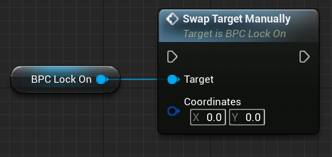 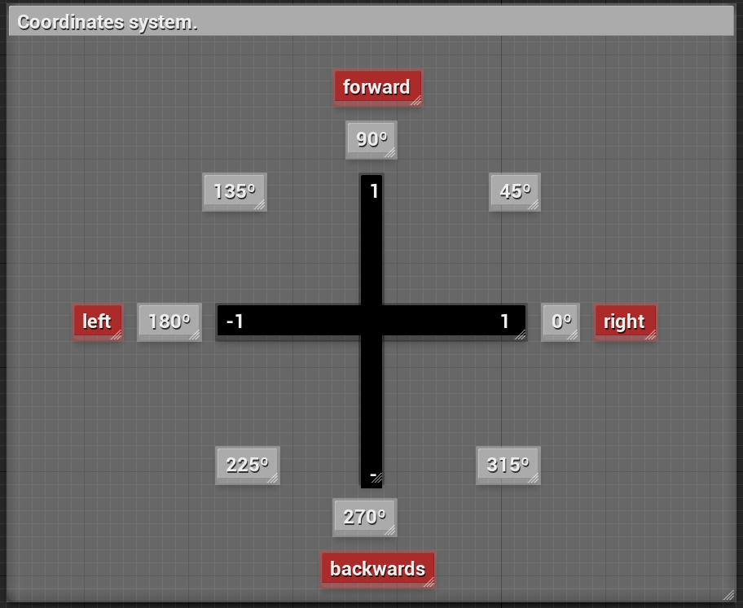
Copy-paste
Begin Object Class=/Script/BlueprintGraph.K2Node_VariableGet Name="K2Node_VariableGet_0"
VariableReference=(MemberName="BPC_LockOn",bSelfContext=True)
NodePosX=-752
NodePosY=2020
NodeGuid=8DE0FB844D4E39D95D000AA6103F0A5D
CustomProperties Pin (PinId=2747D767409AF730E5F5F99C22FDC9DF,PinName="BPC_LockOn",Direction="EGPD_Output",PinType.PinCategory="object",PinType.PinSubCategory="",PinType.PinSubCategoryObject=BlueprintGeneratedClass'"/Game/LockOnTS/Components/BPC_LockOn.BPC_LockOn_C"',PinType.PinSubCategoryMemberReference=(),PinType.PinValueType=(),PinType.ContainerType=None,PinType.bIsReference=False,PinType.bIsConst=False,PinType.bIsWeakPointer=False,PinType.bIsUObjectWrapper=False,LinkedTo=(K2Node_CallFunction_37 9B9926EE49A56ED65E271BB3C4189706,),PersistentGuid=00000000000000000000000000000000,bHidden=False,bNotConnectable=False,bDefaultValueIsReadOnly=False,bDefaultValueIsIgnored=False,bAdvancedView=False,bOrphanedPin=False,)
CustomProperties Pin (PinId=26A11DB64E1A5D1550DABF9156DEF6DC,PinName="self",PinFriendlyName=NSLOCTEXT("K2Node", "Target", "Target"),PinType.PinCategory="object",PinType.PinSubCategory="",PinType.PinSubCategoryObject=BlueprintGeneratedClass'"/Game/LockOnTS/Demo/ThirdPersonTemplate/ThirdPersonBP/Blueprints/ThirdPersonCharacter.ThirdPersonCharacter_C"',PinType.PinSubCategoryMemberReference=(),PinType.PinValueType=(),PinType.ContainerType=None,PinType.bIsReference=False,PinType.bIsConst=False,PinType.bIsWeakPointer=False,PinType.bIsUObjectWrapper=False,PersistentGuid=00000000000000000000000000000000,bHidden=True,bNotConnectable=False,bDefaultValueIsReadOnly=False,bDefaultValueIsIgnored=False,bAdvancedView=False,bOrphanedPin=False,)
End Object
Begin Object Class=/Script/BlueprintGraph.K2Node_CallFunction Name="K2Node_CallFunction_37"
FunctionReference=(MemberParent=BlueprintGeneratedClass'"/Game/LockOnTS/Components/BPC_LockOn.BPC_LockOn_C"',MemberName="SwapTargetManually",MemberGuid=EAA566AA490C94C5AFD47FA165C7B09D)
NodePosX=-576
NodePosY=1952
NodeGuid=1D881C70447BA99524062BA30A9F6766
CustomProperties Pin (PinId=7B02D55243EE0E9E368924AE94472F4C,PinName="execute",PinToolTip="\nExec",PinType.PinCategory="exec",PinType.PinSubCategory="",PinType.PinSubCategoryObject=None,PinType.PinSubCategoryMemberReference=(),PinType.PinValueType=(),PinType.ContainerType=None,PinType.bIsReference=False,PinType.bIsConst=False,PinType.bIsWeakPointer=False,PinType.bIsUObjectWrapper=False,PersistentGuid=00000000000000000000000000000000,bHidden=False,bNotConnectable=False,bDefaultValueIsReadOnly=False,bDefaultValueIsIgnored=False,bAdvancedView=False,bOrphanedPin=False,)
CustomProperties Pin (PinId=80D200E34FFDE7C82CD6EFBCBF279B73,PinName="then",PinToolTip="\nExec",Direction="EGPD_Output",PinType.PinCategory="exec",PinType.PinSubCategory="",PinType.PinSubCategoryObject=None,PinType.PinSubCategoryMemberReference=(),PinType.PinValueType=(),PinType.ContainerType=None,PinType.bIsReference=False,PinType.bIsConst=False,PinType.bIsWeakPointer=False,PinType.bIsUObjectWrapper=False,PersistentGuid=00000000000000000000000000000000,bHidden=False,bNotConnectable=False,bDefaultValueIsReadOnly=False,bDefaultValueIsIgnored=False,bAdvancedView=False,bOrphanedPin=False,)
CustomProperties Pin (PinId=9B9926EE49A56ED65E271BB3C4189706,PinName="self",PinFriendlyName=NSLOCTEXT("K2Node", "Target", "Target"),PinToolTip="Target\nBPC Lock On Object Reference",PinType.PinCategory="object",PinType.PinSubCategory="",PinType.PinSubCategoryObject=BlueprintGeneratedClass'"/Game/LockOnTS/Components/BPC_LockOn.BPC_LockOn_C"',PinType.PinSubCategoryMemberReference=(),PinType.PinValueType=(),PinType.ContainerType=None,PinType.bIsReference=False,PinType.bIsConst=False,PinType.bIsWeakPointer=False,PinType.bIsUObjectWrapper=False,LinkedTo=(K2Node_VariableGet_0 2747D767409AF730E5F5F99C22FDC9DF,),PersistentGuid=00000000000000000000000000000000,bHidden=False,bNotConnectable=False,bDefaultValueIsReadOnly=False,bDefaultValueIsIgnored=False,bAdvancedView=False,bOrphanedPin=False,)
CustomProperties Pin (PinId=1A1A16B34E25750057AF6ABABB540B60,PinName="Coordinates",PinToolTip="Coordinates\nVector 2D Structure",PinType.PinCategory="struct",PinType.PinSubCategory="",PinType.PinSubCategoryObject=ScriptStruct'"/Script/CoreUObject.Vector2D"',PinType.PinSubCategoryMemberReference=(),PinType.PinValueType=(),PinType.ContainerType=None,PinType.bIsReference=False,PinType.bIsConst=False,PinType.bIsWeakPointer=False,PinType.bIsUObjectWrapper=False,PersistentGuid=00000000000000000000000000000000,bHidden=False,bNotConnectable=False,bDefaultValueIsReadOnly=False,bDefaultValueIsIgnored=False,bAdvancedView=False,bOrphanedPin=False,)
End Object
The X and Y axes have the range [-1, 1]. For the X axis, -1 means left and +1 means right. For the Y axis, -1 means backwards and +1 means forwards. You can combine them to create a direction.
Quick notes
You can customize the lock-on component by clicking on the BPC_LockOn component and going to the details panel. There are several customization options, which will be discussed in the #variables section.
Collision detection
Before going further, please make sure to check the object collision types detection, on the lock-on component details panel. Here you choose what kind of objects will be considered as possible target.
Variables and functions tooltips
All variables have a tooltip explaining what they do. To see it, just hover over the variable. The same is valid for any function: hover over the function or open it to see what it does.
Adding target component
This component goes to any actor you want to be able to lock-on. The only requirement is that this target must have at least one component with collision, otherwise the target will not be detected by the lock-on system.
Component object collision type
Make sure that at least one component of the actor has as Object Type some type of collision present in the lock-on component. Otherwise this target will not be detected!
In this example, the object type is WorldDynamic, which is included in the array Target Collision Type Filter of the lock-on component. If it was WorldStatic, for example, you have two options: or to change the object type to something present in the Target Collision Type Filter, or to include WorldStatic in the Target Collision Type Filter array. You can find the collision going to details panel after clicking in one component inside the actor blueprint.
To add the Target Component, open the actor you want to be able to lock-on, go to the components panel. Click Add Component and search for "Target". Add the BPC Target component.
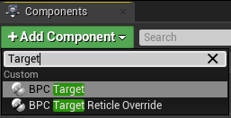
Info
We'll take a look on the BPC Reticle Override later.
Choosing sockets to lock-on
After adding the Target Component, you need to choose the component(s) and socket(s) you want to lock-on on this actor. To do that, click on the Target Component and check the details panel. Search the variable Mesh and Sockets and add the component name you want to lock-on.
Be careful
If this component is inherited, you need to use the component name which is enclosed in parentheses. For example, if I have a pawn and I want to add to lock-on the pawn skeletal mesh, I'll use its name enclosed in parentheses, because it is inherited, as showed below:
(inherited)CharacterMesh0 as the component name. After that, you can add a socket present in this component. In my example, spine_02. If your component doesn't have sockets, you can leave it as "None" and edit the offset. Vector at the right side of the socket name is the offset in relation to the chosen socket.
Tip: how do I find sockets in a skeletal mesh?
You can find sockets by opening the skeleton of the skeletal mesh. You can copy the bone name of the skeleton you want to lock-on and use it as the socket name.
Notice that you can add more than one component, and for each component you can add multiple sockets. This means you can have targets with multiple lock-on points.
Tip: how to inform the system that a target is not a target anymore?
If you destroy the target (for example, an enemy's death, where its death event has a "destroy actor" at the end), nothing needs to be done. The component will be destroyed with the actor.
For any other case (like death event, but not destroying the target or a target that becomes a friend), you just need to call the function SetIsTarget on the target blueprint, using the Target Component reference, where the bIsTarget parameter is false. If you want to turn it a target again, call the same function but with bIsTarget as true.
That's all for the Target Component. You can check some extra details in the #variables section, such as bShowReticle and bIsTarget variables.
Setup finished
With these two components properly configured, you can use the Lock-on Targeting System V4.
In the next sections, you'll see some details about the components and customization, but they're optional, not required to use the tool.
Customization
LTS is a highly customizable tool. Each component has several exposed variables that you can edit in the details panel after clicking over the component on your character (BPC_LockOn) and target (BPC_Target). You can check each variable description in the #variables section. The next two subsections you'll see some cool variables to tweak.
Lock-on component
-
Search Target Method: The search method defines the way that the targets will be searched.Centeredmeans that the closest targets to the center of the screen are best targets; meanwhileNearestwill prioritize the closest targets.Search Target Method
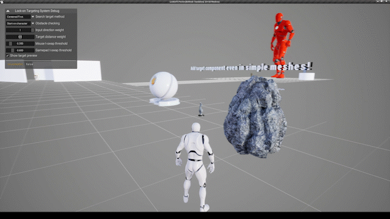 Centered option 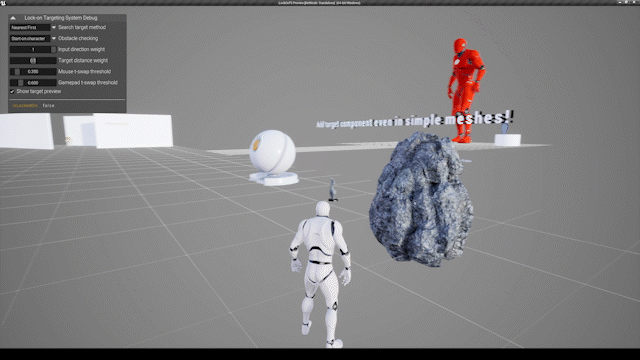 Closest option -
Search Target Direction: this variable defines where the targeting search starts and ends, meaning it can start at the camera-to-forward, or start at the character-to-forward.Use Camera Directionis recommended for third/first person games;Use Character Directionis recommended for top/down and fixed camera games.Search Target Direction
If you mark the variable
bConsiderOffscreenTargetsastrue, the search sphere below will be centered at the characters' position or camera's position.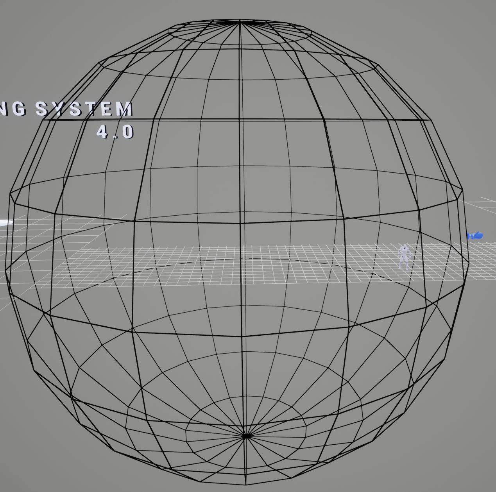 The search spherestarts atcameraand use its forward direction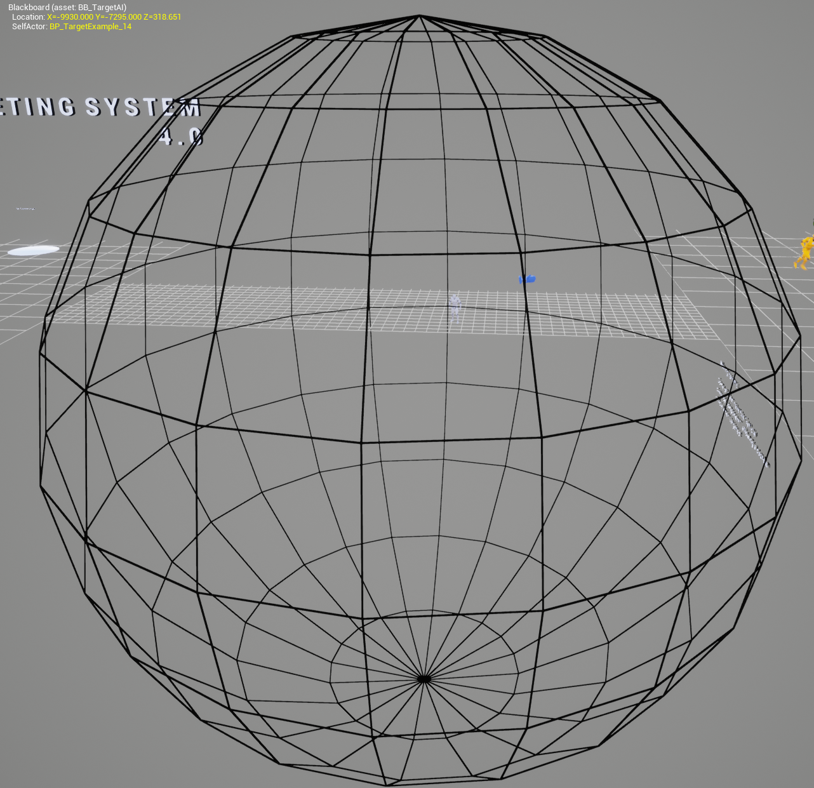 The search spherestarts atcharand use its forward direction -
bRotatePlayerAtTarget: If true, rotates the player to face the target. You have three rotation options in thePlayerRotationTypevariable:UseControllerDesiredRotation(recommended for third/first person games),RotateOnTargetDirection(recommended for top/down and fixed camera games) andRotateOnCameraDirection(similar to the first option, but it has corrections regarding the camera offset, which means it will corretly face the target no matter the camera/spring arm offset). -
bRotateCamera: If true, uses the control rotation to rotate the camera (make sure the booleanUse Pawn Control Rotationis true on thespring arm component, if you have one). You can set an offset using the variableCamera Rotation Offset, whereXwill add an offset in the horizontal direction, andYwill add an offset in the vertical direction. The variableCamera Pitch Rotation Clampwill clamp the pitch rotation (make sure it is in a range[-90, 90]). -
bShowLockOnPreview: If true, shows a preview reticle on the best target. It is updated eachPreviewUpdateTimer(variable) seconds (by default, it updates each 0.1s). This reticle was influenced by Nier: Automata. Its reticle is defined by the variableLock on Preview Widget.Target Preview

Lock-on Preview
Target component
-
bIsTarget: If true, the owner of this component will be considered as a target. Otherwise it will be ignored. You can use the functionSetIsTargetin the actor to set the boolean variable in runtime (with replication). -
bShowReticle: If true, the targeting reticle will appear when locked-on. Otherwise it will be hidden.
Extra components
LTS V4 has two extra components. They were made in extra components so as not to consume unnecessary memory in the main components: the debug and reticle override components.
Debug component
A simple component made to check the lock-on status and to change some settings in runtime. To use it, just add the BPC Lock on Debug component to your character (the one that has the LockOn component).
Lock-on debug component

Reticle override component
This component is used in the target actor. It overrides the targeting reticle when locking-on the actor that owns this component. So you can, for example, create a custom reticle for a boss: when the player lockes it, the custom reticle will be shown.
Override reticle example
In the example below, the orange target has the BPC_ReticleOverride component.
Functions and dispatchers
You can find the functions descriptions below. They have a tooltip description and comments inside it (to check in the project, just hover over the function or open it!).
Functions descriptions
Function |
Description |
|---|---|
| SwapTargetYaw | Informs the system the yaw input to switch target. |
| SwapTargetPitch | Informs the system the pitch input to switch target. |
| SwapTargetManually | Swap the target based on the coordinates direction. Open this function to see the coordinate system. |
| IsLockedOn | Returns the bool that informs if the owner is currently locked on. Not replicated. For replication call the function "isLockedOnREPLICATED". |
| IsLockedOnREPLICATED | Returns the bool that informs if the owner is currently locked on, REPLICATED. |
| GetTargetInfo | Returns information about the current locked-on target: -bool informing if the current target is valid -its reference -the lockedon socket -the target direction |
| SetTarget | Given a target, if it has the target component, it will be set as the new target (if already locked-on, unlocks the current target and then set the new target). |
| UnlockTarget | Unlock the target (marks bIsLockedOn as false, locked-on target reference to null, resets character rotation and clears the current timers). |
| InvalidateTarget | Given a target, invalidate it (setting its "isTarget" variable as false). For replication (network use), the current target MUST replicate (target blueprint -> class defaults -> replicates). You can mark the boolean "bAutoReplicateTarget" to replicate it automatically. |
| Softlock | Rotates the owner to face the best target possible at a given rate (if "rotate character" is true), without locking the camera. Rate must be in a range [0, 1]. A rate of 0.5, for example, will rotate half way. Returns the found target and its direction. Returned actor can be null, so the "bSuccess" indicates if it is valid. |
| InvalidateCurrentTarget | Invalidates the current target (setting its "isTarget" variable as false). For replication (network use), the current target MUST replicate (target blueprint -> class defaults -> replicates). You can mark the boolean "bAutoReplicateTarget" to replicate it automatically. |
| Find Target | Returns the best target based on the search method. The output can be null. |
| GetCameraLookingDirection | Returns the camera looking direction (its forward vector). |
| GetTargetDistance | Returns the distance between the player and the target in meters. |
| SetRotateCamera | Enable/disable the camera rotation. Useful to stop the camera rotation in runtime. |
| GetReticleWidgetReference | Returns the current lock-on reticle widget reference. |
| ChangeReticleByWidgetClass | Given a widget class, overrides the reticle widget using this class. |
| ChangeReticleByWidgetReference | Given a widget reference, overrides the reticle using this reference. |
| ChangeOriginalReticleTexture | Given a texture, restores the original reticle, but changes its default image by this texture. |
| ChangeOriginalReticleMaterial | Given a material, restores the original reticle, but changes its default image by this material. |
| FilterYawAxis | Filters and return the input value based on the "bFreeYawAxis" boolean. |
| FilterPitchAxis | Filters and return the input value based on the "bFreePitchAxis" boolean. |
Function |
Description |
|---|---|
| getCurrentSocket | Returns the current targeted socket of this target. |
| getSockets | Returns the sockets list and its amount. |
| HasOverrideInfo | Check if the owner has the "BPC_TargetReticleOverride" component. Returns if it has and its reference. |
| isMultiTarget | Returns the info if the owner of this component is multitarget (has more than one socket to lock-on). |
| isTarget | Returns the info if the owner of this component is a target. |
| AddTargetSocket | Adds a new socket. If the owner of this component has more than one socket as target, then it will become multitarget. Can be used in runtime. |
| RemoveTargetSocket | Given one component and a socket in it, this function removes this socket from the targets list of this component. If total sockets is equal zero, this actor will not be targetable (similar to isTarget == false). Can be used in runtime. |
| SetIsTarget | Set the variable "bIsTarget" using the input parameter "isTarget". |
This component doesn't have functions.
Function |
Description |
|---|---|
| GetOverrideInfo | Returns the override information. Called in the BP_LockOnPoint blueprint. |
| SetOverrideReference | Set the "override reference" variable, allowing an override using an existent widget reference. |
Tip: How can I bind the lock-on status to my animations?
You can use the function isLockedOnREPLICATED on your blueprint animation. This function returns a boolean to inform if the player has some target locked-on. So, for example, you can use this information to change the current movement animation on your AnimGraph/State Machine. Below you can see how to get the lock-on status information (the example shows a cast to ThirdPersonCharacter, which should be changed to your own pawn type).
The BPC_LockOn and BPC_Target components have also event dispatchers. They can be useful for various reasons. For example, you can use the LockedOn event to change your camera style to a combat style. There are a lot of possibilities. The images below show the event dispatchers. You can find them by clicking over the component and going on the details panel. The events are down below this panel with a green + symbol.
Event dispatchers
Variables
You can find the variables descriptions below. They have a tooltip in the project (to check there, just hover over the variable!).
Variables descriptions
Variable |
Description |
|---|---|
| SearchTargetMethod | Defines how the search for targets will behave. |
| SearchTargetBaseDirection | Uses the camera or character direction to search enemies. "Use Camera Direction" is recommended for 3D projects that you can control the camera. "Use character direction" is recommended for games with fixed camera (when you're not able to move the camera, but can control the character, like top-down games). |
| TargetCollisionTypeFilter | Choose the objects types that will respond to the search for targets. |
| TargetClassFilter | Can be empty. You can choose a class to filter. |
| bCheckObstacles | If true, will check if there is any obstacle between the player and the target. |
| bCanLockOnThroughObstacles | If true, will allow to lock-on through obstacles, like walls. Notice that the boolean "check obstacles" must be false, otherwise it will lock-on but an unlock will happen afterwards. |
| ObstaclesCollisionResponse | Choose what kind of collision is considered an obstacle. |
| BeforeLockedObstacleCheckingStartLocation | Choose where the obstacle checking starts before locking on. |
| AfterLockedObstacleCheckingStartLocation | Choose where the obstacle checking starts after locked-on. |
| ToleranceTimeForObstacleDetected | If an obstacle was found, this variable will be used, in seconds, to start a timer to wait the player goes back to a non-obstacle position. If not found, then the unlock will occur or a new target will be searched. |
| LockOnCaptureRadius | Choose the lock-on radius in centimeters. Only targets within this radius will be considered as possible target. |
| bCheckLostDistance | If true, checks the distance between the player and the target. |
| LostTargetDistance | If "bCheckLostDistance" is true, the target will by lost if its distance is greater than the value of this variable. |
| ToleranceTimeForLostDistance | If the target distance is greater than "LostTargetDistance", this tolerance time will be used to unlock the current target or search for a new one. So, for example, if the value is 2 seconds, if the target was lost, 2 seconds will be counted and, if the distance does not decrease (be less than "LostTargetDistance"), the target will be lost. |
| LockOnWidgetClass | Defines the default lock-on reticle. This reticle will appear on the targets that does not have the "reticle override" component. |
| bIsLockedOn | Informs the system if the player is locked-on. Private variable. You can access it calling the pure function "isLockedOn". |
| CurrentLockedOnTarget | Saves the current target reference. If not locked-on, this variable has a null value. |
| LockOnPointReference | Saves the LockOn helper reference. |
| CenteredTolerance | If search method contains "centered", this variable is used to filter how close to the center of the screen the target should be to be considered when using the search method "Centered". |
| bAutofindTarget | If true, uses the variable "Autofind Target When" to search a new target after a choosen situation given by the variable. |
| AutofindTargetWhen | This variable is used to find a new target in a certain situation if the variable "bAutofindTarget" is true. |
| InputDirectionWeight | Defines the input direction weight when swapping target. |
| DistanceWeight | Defines the distance between the player and target weight when swapping target. |
| CharacterRotationType | Defines the rotation method. |
| bRotatePlayerAtTarget | If true, rotates the character to face the target. |
| AutofindTargetMethod | Searches a new target using the search method given by this variable. |
| PlayerRotationInterpolationSpeed | If the rotation type is different than "use controller desired rotation", this variable is used to interpolate the player rotation after the StartingPlayerRotation curve is finished. |
| bRotateCamera | If true, rotates the camera while locked-on. |
| CameraRotationInterpolationSpeed | If the variable "bRotateCamera" is true, this variable is used as the speed to interpolate the camera rotation. |
| StartingPlayerRotationCurve | This curve is used to smoothly rotate the player at the target direction when locked-on. Used if the variable "bRotatePlayerAtTarget" is true and if the "PlayerRotationType" is different than "Use controller desired rotation". |
| CameraPitchRotationClamp | Pitch rotation has a range of [-90, +90]. The closer to 90, the greater is the pitch rotation when looking at the target. Default value: [-50, +50] |
| bClampPitchRotation | If true, clamps the camera pitch rotation using the range of the "CameraPitchRotationClamp" variable. |
| CameraRotationOffset | Adds an offset in the camera rotation if "bRotateCamera" is true. X offers an offset in yaw and Y in pitch. |
| bShowLockOnPreview | If true, shows a preview reticle on the best target based on the target settings. |
| PreviewUpdateTimer | If "bShowLockOnPreview" is true, this value is used to update the preview reticle. The greater this value the less expensive for calculation the preview is, but also less precise. |
| bConsiderOffscreenTargets | If you want to be able to lock-on onto targets behind the camera (in radius), mark this option as true. |
| LockOnPreviewWidget | If "bShowLockOnPreview" is true, this variable defines the preview reticle that will show up on the previewed target. The preview will disappear when locked-on. |
| LockOnPreviewReference | Saves the lock-on preview reference. If the preview is not used, this variable wil be null. |
Variable |
Description |
|---|---|
| bIsTarget | If true, the owner of this component can be locked-on. Can be changed at runtime (call "SetIsTarget" function for replication). |
| bShowReticle | If true, shows the lock-on widget reticle when locked-on. |
| MeshAndSockets | Map of components and sockets that the player will be able to lock-on. |
| bIsMultiTarget | Tells if the owner of this component is multitarget. This variable is set automatically based on the total sockets. |
| CurrentSocket | Saves the current socket the player is locked-on. |
| SocketsData | Saves all socket informations. |
Variable |
Description |
|---|---|
| bShowDebug | If false, debug info will not show up. |
| bShowLockOnArea | If true, shows an area that the targets can be captured. |
| bShowInputArrows | Shows the input (mouse and gamepad) arrows. Useful to see the targeting swap direction. |
| bShowDebugWidget | If true, shows the widget that contains information. |
| bShowTargetDebug | If true, draws a sphere around the current target, shows its display name and its distance. |
Variable |
Description |
|---|---|
| bOverrideReticle | If true, it will override the lock-on using one of the methods in the "override method" variable. |
| OverrideMethod | Choose the method to override the reticle. Depending on the choosen method, set the corresponding variable below. If the method choosen is "override reference", you must to call manually the function "set override reference" in order to set the reference. |
| OverrideClass | Choose a user widget class to override the lock-on reticle. Set "override method" to "override by widget class". |
| OverrideTexture | Choose a texture to override the lock-on reticle. The reticle will be changed to the lock-on original, then its texture will be changed. Set "override method" to "override by texture". |
| OverrideMaterial | Choose a material to override the lock-on reticle. The reticle will be changed to the lock-on original, then its material will be changed. Set "override method" to "override by material". |
Integration with external projects
LTS is very flexible. It can be used in many types of projects. One of the most popular project, the Advanced Locomotion System, is fully compatible with LTS. You can check how to integrate both in this video.
Previous versions
Update log
2023/01: version 4.0 released.
4.0 news
- New input system, switch targets in any direction
- Use the target component in any actor with collision
- Multitargeting in one or more meshes and sockets
- Target preview option
- Softlock (call the
softlockfunction) - Several useful functions
- Performance improved
- Easier to use
- First/third person support
- Splitscreen support
- Top/down games support
- Network support
2021/09: version 3.0 released.
2020/09: version 2.0 released.
2020/05: version 1.0 released.
Questions and answers
I'm using the Advanced Locomotion System (ALS/ALSV3/ALSV4). Do you have any tutorials on integration of both systems?
Yes. You can check this video to setup the Lock-on Targeting System in the ALS project.
My target is not detected when I call the lock-on toggle event. Am I doing something wrong?
You need to check the following steps:
- Make sure your target has the
BPC_Targetcomponent. - Make sure your target has collision in at least one of its components.
- Make sure that at least one of the collisions object types in the components of the target are included in the
BPC_LockOncomponent, as showed in the #Choosing sockets to lock-on section.
My game is a first person game. Can I use this asset to lock-on?
Yes, you can. The setup process is identical to the third person, showed in this documentation (#Getting Started) and in the tutorial video. I just recommend that you mark the variable bRotateCharacterAtTarget as false, because your first person project probably already does that.
My game is a top down project or fixed camera project. Can I use this asset to lock-on?
Yes, you can. Here is a video showing how you can do that. The basic ideia is to mark the variable SearchTargetBaseDirection of the BPC_LockOn component as UseCharacterDirection.
My game is a platform game. Can I use this asset to lock-on?
Yes, you can. The setup process is similar to the question above, but in this case, mark the variable bRotateCamera as false. Also, if you want to lock-on targets behind your player, mark the variable bConsiderOffscreenTargets as true in the LockOn component reference.
My game is a splitscreen project. Can I use this asset to lock-on?
Yes, you can. This system includes native support for splitscreen projects.
My game is online. Can I used this asset to lock-on?
Yes, you can. This asset works with network games.
How can I lock-on targets behind my character?
Mark the variable bConsiderOffscreenTargets as true in the LockOn component reference.
I have multiple characters, and I need to possess more than one during the gameplay. How can I enable the lock-on performer on all of them?
You can add the BPC_LockOn component on all of them. But to have the lock-on settings working properly, you'll need to make quick mod in order to have the LockOn point being owned by all characters. You can check here how to do this. Also, I recommend calling the Unlock function before your possessing event, to avoid errors with player controller checking on non-possessed pawns.
Is there a way to consider targets within an angle? Or can I add more conditions to filter the possible target?
Yes, you can add more conditions to filter the targets capture. You can do it by adding more conditions into the last branch of the function Get Targets located on the BPC_LockOn component. Below you can see an example, adding an extra condition to capture targets within a range of 10 degrees in relation to the camera forward vector direction.